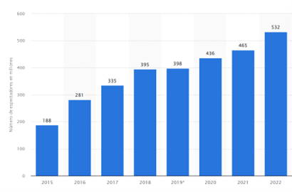
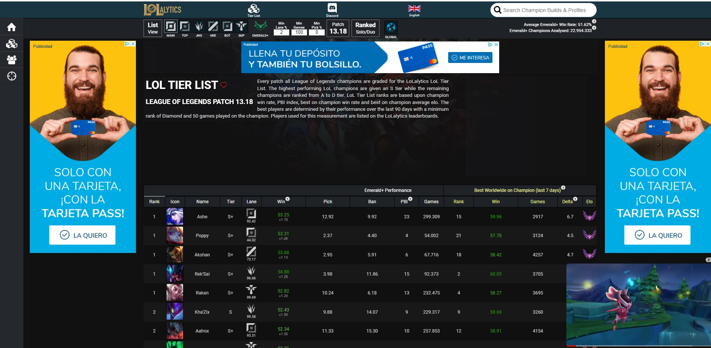
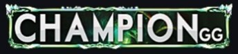
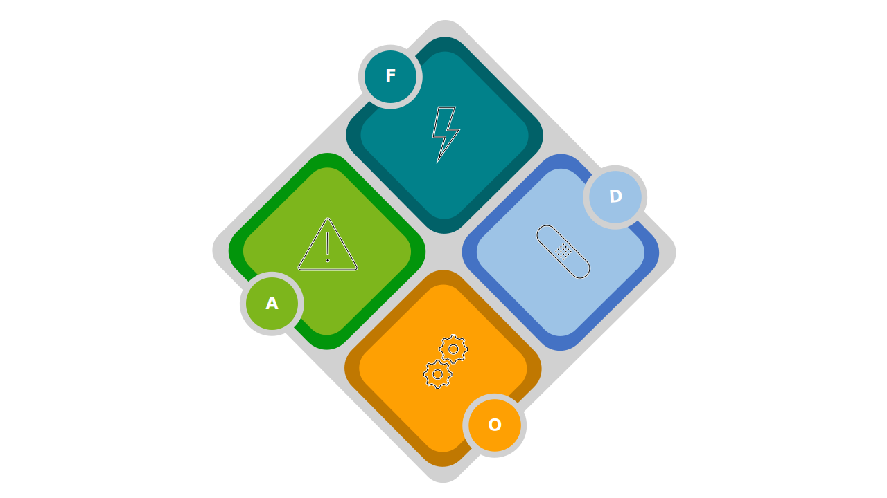

1. Introducción 1.1 ¿Qué son los E-Sports? Los deportes electrónicos, o e-sports, se constituyen como una industria que combina el mundo de los videojuegos con la competición profesional. La revolución de las nuevas tecnologías muestra desde hace tiempo un gran impacto sobre la sociedad y la economía dando lugar a importantes modificaciones en numerosos modelos de negocios tradicionales, así como en la aparición de nuevas industrias, como es el caso de la industria de los videojuegos. Este sector cada vez tiene mayor potencial industrial y es uno de los sectores tecnológicos con mayor proyección de crecimiento. Inicialmente los videojuegos empezaron como un hobby individual que se practicaba en el salón de casa con una videoconsola, con la mejora de las telecomunicaciones, su forma de juego se transformó a ser una experiencia comunitaria, con partidas entre usuarios y grupales. El crecimiento de esta industria de ocio ha sido exponencial, desbancando a otras industrias de ocio que eran hegemónicas en décadas pasadas. La industria del videojuego se ha convertido en la reina entre todas las industrias del ocio constituyéndose hoy en día en referente de la economía digital. En torno a esta industria han surgido puestos de trabajo específicos con un alto grado de profesionalización. Como una industria derivada de la de los videojuegos, surge un negocio basado en éstos y que incorpora competiciones y retrasmisiones de dichos eventos, al más puro estilo de competiciones deportivas, que se presentan tanto como ligas nacionales o internacionales y que se han convertido en un fenómeno cultural que atrae a millones de espectadores y participantes en todo el mundo, conviertiéndose en un negocio en constante crecimiento. Evolución de espectadores E-Sports en EE.UU. Fuente:eMarketer. No todos los videojuegos se pueden considerar e-sports, para que así lo sean, tienen que cumplir una serie de condiciones específicas: El juego permite el enfrentamiento directo entre dos o más participantes. Los jugadores compiten en igualdad de condiciones, siendo la victoria exclusivamente determinada por la habilidad de estos. Existen ligas y competiciones oficiales reguladas con reglas y formadas por equipos y jugadores profesionales. Goza de popularidad y seguimiento en sus retrasmisiones. 1.1.1 Historia Aunque los videojuegos nacen a finales de la década de los 70 prácticamente a la par que los primeros ordenadores, hay que esperar hasta principios de la década de los 90 cuando empiezan a surgir las primeras competiciones en forma de torneos locales y en las que los jugadores empiezan a competir por premios en efectivo y reconocimiento. A medida que la tecnología y la conectividad en línea avanzaban, los E-sports se expandieron a nivel global, con juegos como "Quake" y "Counter-Strike" definiendo el género de los juegos de disparos en primera persona Quake(FPS) y atrayendo a comunidades competitivas. La década de 2000 presenció un aumento constante en la profesionalización de los E-sports. Se establecieron ligas y organizaciones formales, y juegos como "Warcraft III" y "StarCraft" se convirtieron en fenómenos competitivos en Asia, particularmente en Corea del Sur. La aparición de plataformas de transmisión en línea permitió que las competiciones fueran accesibles para una audiencia global, sentando las bases para el auge de los E-sports en la década siguiente. Con el advenimiento de juegos como "League of Legends", "Dota 2" y "Overwatch", los E-sports experimentaron un crecimiento explosivo en la década de 2010. Los premios en efectivo aumentaron significativamente, y los eventos en vivo atraían a multitud de espectadores. Grandes marcas y patrocinadores comenzaron a invertir en los E-sports, y los jugadores se convirtieron en celebridades en la comunidad de los juegos. Hoy en día, los E-sports son una industria multimillonaria, con torneos de gran envergadura, ligas profesionales y equipos reconocidos internacionalmente, consolidando su lugar como una forma legítima y emocionante de competición y entretenimiento en el mundo digital. 1.1.2 Tipos de juegos Aunque el mundo de los videojuegos lanza millares de juegos al año, son pocos los que se convierten, por sus características, objeto de competiciones formando parte del universo E-Sports. En general, se pueden agrupar dentro de las siguientes clases: FPS (First Psrson Shooting) Disparos en primera persona: Juegos en los que los jugadores controlan un personaje desde una perspectiva en primera persona y se centran en la acción de disparar armas de fuego. Ejemplos: Counter-Strike: Globsal Offensive, Call of Duty, Overwatch. MOBA (Arte de la Batalla en Línea Multijugador): Juegos de estrategia en tiempo real en los que dos equipos compiten para destruir la base del oponente. Los jugadores controlan héroes con habilidades únicas. Ejemplos: League of Legends, Dota 2, Heroes of the Storm Juegos de lucha: Juegos en los que los jugadores controlan personajes con habilidades de lucha en combates uno contra uno o en equipo. Ejemplos: Street Fighter, Super Smash Bros., Tekken. RTS: Juegos de estrategia en tiempo real. Juegos en los que los jugadores gestionan recursos y ejércitos para derrotar a sus oponentes. Ejemplos: StarCraft II, Age of Empires, Warcraft III. Battle Royale: Juegos en los que un gran número de jugadores se enfrentan en un entorno de supervivencia hasta que quede un último jugador o equipo en pie. Ejemplos: Fortnite, PlayerUnknown's Battlegrounds (PUBG), Apex Legends. Juegos de deportes: Simulaciones de deportes tradicionales como fútbol, baloncesto, carreras, etc., adaptados a entornos virtuales. Ejemplos: FIFA, NBA 2K, Rocket League. 1.1.3 Ingresos La principal fuente de ingresos en el negocio de los e-sports proviene de patrocinios y acuerdos de colaboración con marcas. Empresas de tecnología, alimentación, ropa, etc han invertido considerablemente en patrocinar equipos, jugadores y eventos, aprovechando la exposición a la audiencia global que los e-sports ofrecen. Además, los derechos de transmisión y los contratos de medios representan otra fuente significativa de ingresos, con plataformas de streaming y televisión que adquieren los derechos para transmitir en vivo los torneos. La venta de entradas para eventos presenciales y la organización de torneos también contribuyen al negocio de los e-sports. Grandes arenas y estadios se llenan de fanáticos para presenciar en vivo las emocionantes competencias, creando una atmósfera similar a la de los deportes tradicionales. Además, los ingresos por publicidad y mercancía, como camisetas y artículos temáticos, complementan las ganancias de la industria. La inversión en infraestructura y tecnología es esencial para mantener la competitividad en el negocio de los e-sports. Los equipos y jugadores requieren equipos de alta calidad, instalaciones de entrenamiento y asesoramiento técnico para mantener su rendimiento óptimo. Además, las ligas y organizaciones deben garantizar una experiencia de transmisión en línea de alta calidad para satisfacer las expectativas de los espectadores. 1.1.4 Equipos deportivos Los atletas de los deportes electrónicos mantienen rigurosas rutinas de entrenamiento. A su disposición suelen contar con una infraestructura elaborada que incluye entrenadores, analistas e incluso psicólogos deportivos. Además de la preparación mental, mantener su forma física es esencial para lograr un rendimiento sobresaliente en las partidas. Por esta misma razón, muchos siguen regímenes alimenticios saludables y acuden al gimnasio. Los clubes deportivos convencionales y hasta las grandes competiciones como La Liga española ya están incursionando en el ámbito de los deportes electrónicos. Un claro ejemplo es el Baskonia, el tercer club de baloncesto más grande de España que ha estado comprometido con los esports desde su inicio hace en 2015. Siguiendo esta tendencia, el FC Barcelona también ha reconocido el potencial en 2018. Incluso el icónico Santos Fútbol Club brasileño cuenta con su propia división electrónica. No obstante, estos no son los únicos clubes que se han sumado: ejemplos adicionales incluyen al Valencia CF, Schalke 04, Spotting de Lisboa, Manchester City, Wolfsburgo, West Ham United, Besiktas, y un largo etc. 1.2 ¿Qué es Riot? Riot Games Inc. es una compañía estadounidense dedicada a la creación y publicación de videojuegos, así como a la organización de competiciones de deportes electrónicos. Tiene su sede en West Los Angeles, California. Fundada en septiembre de 2006 por los emprendedores Brandon Beck y Marc Merrill con la principal idea de desrrollar el videojuego League of Legends y construir un negocio en torno a él. En 2009liberan la versión beta para testeo del público y seis meses después, en 27 de octubre de 2009 por fin lanzan la versión oficial del juego, un videojuego en linea multijugador gratuito en el que el usuario puede realizar microcompras para acceder a extras. Desde su lanzamiento, la empresa se dedica a mejorar el juego gracias a la interactuación en foros de los usuarios implementando ajustes según los comentarios recibidos, de forma que dos años depués de su lanzamiento, la empresa publica unos ingresos de 85 millones de dolares y traslada su sede europea de Brighton a Dublin En febrero de 2011, Tencent Holdings Limited, una de las empresas chinas más grandes del mundo del entretenimiento y la tecnología adquirió la empresa Riot Games por más de 400 millones de dolares. A pesar de hacerse el control de la empresa, mantenía todo el equipo directivo y creativo de Riot Games, lo que permite mantener la estrategia inicial que habían diseñado Brandon Beck y Marc Merrill La estrategia, entre otras ideas que se desarrollan más adelante al hablar específicamente de League of Legends, consistía en centrarse en mejorar la experiencia de usuario como si fuera un videojuego comercial de pago pero siguiendo siendo gratuíto. Esto le permitió crecer de una manera arrolladora, incrementando número de jugadores habituales suscritos e ingresos, hasta tal punto que ya en 2014 preveían unos ingresos de 1000 millones de dólares La empresa ha generado diversos títulos relacionados con esta misma franquicia. Además del videojuego, Riot Games supervisa 14 ligas e-sports a nivel global, incluyendo el prestigioso Campeonato del Mundo de League of Legends. 1.2.1 Tencent Tencent es un conglomerado multinacional chino fundado en 1998 por Ma Huateng, Zhang Zhidong y Xu Chenye. Entre sus diversas subsidiarias globales se encuentran empresas en las industrias de servicios en línea, música e inteligencia artificial. Pero quizás sea más conocido por su interés en el sector de los videojuegos, tanto como desarrollador de juegos para el mercado chino como adquirente de varias empresas de juegos establecidas. Tencent es una gran empresa con participación en más de 600 empresas. Actuales negocios más significativos de Tencent Holdings: Videojuegos en línea como el COD Online o el Dungeon Fighter Online Acuerdos con grandes productores para la distribución de música E-commerce como JD.com Plataforma de mensajería instantánea como QQ Weibo, plataforma en China similar a Twitter Wechat, plataforma similar a whatssup en China, que cuenta con más de 770 millones de usuarios activos. Estructura empresarial Tescent. Las acciones de Tencent Holdings se negocian en la bolsa de Hong Kong (HKG) y en la Bolsa de Frankfurt (FRA). Cotización Tencent. 1.3 League of Legends "League of Legends" (popularmente conocido par la abreviatura LoL) es un popular videojuego en línea de estrategia con elementos multijugador, del género MOBA, que se enfoca en magia y tácticas, donde dos equipos compuestos por cinco jugadores cada uno, se esfuerzan por aniquilar la base enemiga. Desde su lanzamiento oficial el 27 de octubre de 2009 ha ganado una gran base de jugadores y una presencia principal en la escena competitiva de los deportes electrónicos (E-Sports). El juego involucra participar en diversas ligas, tanto de gran envergadura como más pequeñas, las cuales se llevan a cabo en diferentes partes del mundo. El evento principal de esta competición es el Campeonato Mundial, un evento que se extiende durante aproximadamente un mes y que establece el rumbo de la temporada para los mejores jugadores del juego. Debido a su popularidad y éxito, "League of Legends" se ha convertido en uno de los títulos más influyentes en la industria de los videojuegos y ha dado lugar a una extensa comunidad de jugadores, retransmisiones en vivo y estructura de ligas competitivas sólida en los E-Sports, con torneos y campeonatos con un gran seguimiento a nivel mundial. Para conseguir situarlo entre los E-sports más seguidos, Riot Games adoptó dos decisiones fundamentales en la estrategia de comercialización de su videojuego League of Legends: En primer lugar, han priorizado las necesidades de los jugadores. Los propios diseñadores y propietarios de la compañía son ávidos jugadores de League of Legends y otros títulos. Esta cercanía les permitió desde el comienzo a mejorar constantemente el juego, adaptándolo a las preferencias de su audiencia mediante actualizaciones mensuales y pruebas diarias. La segunda decisión trascendental fue crear un juego en línea gratuito para PC, decisión que creó a tendencia detro de la industria. Esto respondió a una demanda que experimentaba obstáculos significativos debido a las barreras de entrada asociadas con los pagos iniciales o suscripciones mensuales. Riot Games eliminó esta barrera al ofrecer un producto accesible y sin coste alguno para todo tipo de público. Existen además otros dos hechos diferenciadores clave en la experiencia de juego en comparación con otros títulos existentes, lo que ha sido esencial para su éxito y está generando tendencias en el sector: En primer lugar, han diseñado un juego con una curva de aprendizaje inicial suave, atrayendo a nuevos jugadores, y al mismo tiempo, una curva de aprendizaje avanzada que desafía a aquellos que aspiran a dominar el juego. Esto hace que League of Legends sea atractivo para un público casual que no puede dedicar mucho tiempo al juego, mientras que ofrece profundidad y desafío para los jugadores más dedicados. El segundo diferenciador significativo es la implementación de micropagos que no desequilibran la experiencia de juego. Estos micropagos se enfocan en mejoras visuales y no otorgan ventajas competitivas por invertir más dinero. Esta estrategia fomenta una lealtad a largo plazo, ya que la ausencia de equilibrio en el juego solía llevar a la pérdida de jugadores. Además, la existencia de micropagos es esencial para mantener la estructura del juego. Riot Games ha gestionado esta dinámica de manera innovadora para no comprometer la base de jugadores, abordando así un problema que afectaba a muchos juegos que hacían uso de micropagos. 1.3.1 Ingresos League of Legend En enero de 2021, League of Legends sólo gano por ingresos 1,75$ mil millones de dólares. Sus principales fuentes de ingresos son: Compras en el juego: Las microtransacciones en juegos como League of Legends generan importantes ingresos, ganando alrededor de $ 31 por segundo. Esquema de negocio Free-to play Es un factor muy importante a destacar que la mayoría de los ingresos de Riot Games son producidos por la tienda online y vienen dados de productos virtuales intangibles cuya inversión inicial es alta, pero a medida que pasa el tiempo sus costes son muy bajos comparado con los beneficios que se generan Publicidad: La empresa gana con la publicidad durante los torneos de eSports transmitidos en plataformas como YouTube Deportes electrónicos: Riot Games vende patrocinios, derechos de transmisión y entradas para eventos en vivo para sus torneos de eSports. Mercancías: La empresa vende productos relacionados con juegos y colabora con marcas como Nike y Coca-Cola. 1.3.2 Evolución de suscriptores Desde su lanzamiento oficial, el número de suscriptores no ha parado de crecer. En agosto de 2023, últimos datos disponibles, cuenta con alrededor de 150 millones de jugadores activos; cuando en el mismo mes de 2020, el juego contaba con 105 millones de cuentas activas. Por tanto, a pesar de la antigüedad del juego, las mejoras y actualizaciones hacen que el total de jugadores siga en una dinámica creciente Evolución suscriptores Fuente: Activeplayer.io Otros datos interesantes que desmuestran el impacto a nivel mundial que tiene el juego es el volumen de espectadores en retransmisiones de partidas o eventos a través de la plataforma Twitch. En agosto de 2023, ha habido retrasmisiones mundiales de partidas en Twitch con picos de audiencia de más de 400.000 espectadores y en ese mes, las horas totales acumuladas de visualización de partidas o eventos a través de esa plataforma superaban los 95 millones de horas Datos actuales sobre visualizaciones Fuente: Activeplayer.io Según la página web Statista.com, los eventos de LoL en Twitch fueron vistos por una media de aproximadamente 129.400 espectadores en noviembre de 2022, última fecha donde presenta datos y muestra una claro crecimiento desde 2018. Su audiencia máxima en la plataforma de streaming la alcanzó en 2021, coincidiendo con el estreno de Netflix de la serie de animación Arcane, basada en el juego. Concretamente, se registraron más de algo más 280.000 espectadores a nivel mundial durante dicho mes. Datos espectadores hasta 2022 según web Statica Fuente: Statista.com 1.3.3 Ligas y competiciones Existen numerosas ligas y competiciones de LoL en todo el mundo tanto a nivel regional como mundial. Entre las principales ligas y competiciones de LoL destacan: League of Legends Championship Series (LCS): La LCS es la liga profesional de LoL en América del Norte (Estado Unidos y Canadá). Se juega en dos divisiones: la LCS y la Academy League, que sirve como cantera de talentos. Los equipos compiten en temporadas regulares y playoffs para ganar el título de campeón de la región y la oportunidad de representar a NA en torneos internacionales. League of Legends European Championship (LEC): La LEC es la liga equivalente en Europa, que sigue un formato similar al de la LCS. Los equipos compiten en temporadas regulares y playoffs, y el campeón europeo avanza a competiciones internacionales. League of Legends Pro League (LPL): La LPL es la liga profesional de LoL en China. Los equipos chinos han tenido un éxito notable en torneos mundiales. League of Legends Champions Korea (LCK): La LCK es la liga profesional de LoL en Corea del Sur, una de las regiones más dominantes en la historia de los deportes electrónicos de LoL. Los equipos coreanos han ganado múltiples Campeonatos Mundiales de LoL. Campeonato Mundial de League of Legends (Worlds): Es la competición más prestigiosa dentro de todo el circuito d LoL eSports. Los mejores equipos de todas las regiones compiten por el título de campeón mundial. Worlds atrae a una enorme audiencia global y supone una gran bolsa de premios para los equipos que compiten. Mid-Season Invitational (MSI): MSI es un torneo internacional que se celebra en la mitad de la temporada y reúne a los campeones de diferentes regiones. Es una oportunidad para que los equipos demuestren su habilidad a nivel global. All-Star Event: Este evento anual reúne a los jugadores más destacados de todo el mundo en una competición amistosa, al estilo de los All-Star de la NBA. Los fans votan por sus jugadores favoritos para formar equipos representativos de cada región. Ligas regionales: Además de las ligas mencionadas, muchas otras regiones también tienen sus propias ligas profesionales, como la LMS en Taiwán y el Sudeste Asiático, la PCS en el Pacífico, y la liga española: Se realizan dos temporadas, la de invierno y la de verano, donde según tu clasificación en los “playoffs” obtienes puntos para el campeonato mundial. Al igual que la UEFA concede plazas para la “Liga de Campeones” en el fútbol dependiendo de la fuerza de la liga de una región, los organizadores del premio del Campeonato Mundial de LoL hacen exactamente lo mismo. Por ejemplo, la liga China dispone de cuatro puestos, mientras que Europa tres y las ligas menores como Brasil sólo una. 1.3.4 Retrasmisiones y streamers Riot Games, organiza retransmisiones oficiales de sus competiciones. Estas retransmisiones se realizan en múltiples idiomas y se pueden seguir en plataformas como Twitch y YouTube. Sin embargo, gran parte de la popularidad de League of Legends se ha basado en las retransmisiones en vivo (streams) por locutores no profesionales conocidos por streamers Entre algunos de los streamers más influyentes a nivel mundial se incluyen : Tyler1 (Tyler Steinkamp): Conocido por su personalidad enérgica y su juego agresivo, Tyler1 es uno de los streamers más populares de LoL. Imaqtpie (Michael Santana): Antiguo jugador profesional que ahora se dedica al streaming. Es conocido por su sentido del humor y su estilo relajado. Yassuo (Moe Harada): Conocido por su habilidad en jugar con campeones de media y su interacción activa con los espectadores. Voyboy (Joedat Esfahani): Exjugador profesional que se ha centrado en el streaming y es respetado por su habilidad y experiencia en el juego. Nightblue3 (Rabia Yazbek): Es famoso por su contenido educativo y guías sobre cómo mejorar en LoL. En español, existen varios streamers con grandes audiencias, sin embargo, el más destacado y conocido es el de Ibai Llanos, que precisamente se dio a conocer en 2014 por sus retrasmisiones de partidas de League of Legends para la Superliga Española y que rápidamente fue promovido para retransmitir la liga norteamericana LCS. Retransmisiones donde posee records mundiales de audiencia por su canal de Twitch, en el que tiene 15 millones de suscriptores. Hoy en día, compagina sus retrasmisiones de esports con otras múltiples actividades: es copropietario junto al ex-jugador de fútbol Gerard Piqué del equipo de esports KOI, además de promover eventos de deportes alternativos seguidos por audiencias millonarias. Según la página web Dexerto.es , estos son los 5 streamers en español de eventos de League of Legends con mayores audiencias en diciembre de 2022: POSICIÓN STREAMER HORAS VISTAS HORAS DE STREAMING PICO DE ESPECTADORES MEDIA DE ESPECTADORES 1 ElmiilloR 907.599 192 8.767 4.709 2 Knekro 420.494 57 11.273 7.313 3 Nissaxter 405.560 100 7.861 4.045 4 Werlyb 420.494 57 11.273 7.313 5 BarbaKahn 143.874 20 10.332 10. 332 1.4 Bases del juego Dos conjuntos de cinco jugadores cada uno, uno identificado por el color azul y otro por el rojo, se enfrentan en un campo de batalla. La mayor parte de la acción se desarrolla en tres vías designadas como “superior”. “central” e “inferior”, además de las bases respectivas. Cualquier área en el mapa que no esté ocupada por las vías o las bases se denomina jungla, donde los jugadores pueden encontrar monstruos neutrales que al eleminarlos pueden obtener como recompensas oro y experiencia. Vía Superior Vía Central Vía Inferior Jungla Jungla Campo de batalla donde se desarrollan las partidas Los jugadores eligen lo se se denominan “campeones”, avatares que poseen distitans habilidades tanto en ataque como en defensa. Antes de comenzar la partida, el equipo rival "banea" la elección de 5 campeones y el equipo contrario tiene que elegir entre los que quedan seleccionables. Existen más de 130 Campeones disponibles . Cada uno cuenta con cuatro habilidades únicas. Cada una de ellas tiene una tecla asignada (Q, W, E o R). La cuarta habilidad (R) recibe el nombre de “Ultimate” o “Definitiva”, es la más importante y potente y la que más tiempo requiere para ser utilizada. Durante la partida, los jugadores pueden mejorar las habilidades del campeón que han seleccionado mediante compras que realizan en la base con el oro que han ido acumulando durante la partida, las compras son objetos que mejoran sus habilidades mágicas y aumentar su potencial de defensa y daño. Paralelamente, ganar experiencia ayuda a los jugadores a subir de nivel. Además de los campeones cada equipo cuenta con una horda de “esbirros” (minions) controlados por el juego para ayudar a derribar la base enemiga. El equipo que logra destruir primero una estructura conocida como el “Nexo”, ubicada en la parte trasera de la base del enemigo, se alza como vencedor. A pesar de la sencilla apariencia que posee, se puede afirmar que la realidad es mucho más compleja. Mientras al menos uno de los tres “Inhibidores” o alguna de las torretas en la base, permanezca en pie, el Nexo no podrá ser atacado. Las Torretas desempeñan un papel crucial en el juego, infringiendo daño a los enemigos y permitiendo que un equipo tenga un mayor control del campo de batalla. Frecuentemente, los equipos recurren a los esbirros, que son generados automáticamente por el Nexo y no está bajo el control directo de los jugadores, para ayudar a derribar algunas torretas. 1.3.2 Modos de juego Con el fin de preservar la popularidad del videojuego, suelen incorporarse distintos modos de juego. Estos modos pueden estar disponibles por un periodo limitado de tiempo o en dependencia de su éxito terminar siendo una parte establecida del mismo. En la actualidad, se mantienen como modos permanentes el Clásico, el Dominon y el ARAM (All Random un Mid). De manera reciente se ha incorporado el modo TeamFight Tactics. Por otro lado, eventos como Snowdown, IRF (Ultra Rapid Fire) y ARUF (All Random Ultra Rapid Fira) son ejemplos de modos que han estado temporalmente disponibles. A continuación, se explican algunos de los distintos modos de juego : MODO DESCRIPCIÓN Clásico Es el modo original de League of Legends, se centra en destruir el Nexo enemigo. Hay dos mapas disponibles “La Grieta del Invocador” y el “Bosque Retorcido”, cada uno con diferente cantidad de jugadores. Es necesario derribar las torretas e inhibidores que protegen los Nexos enemigos. Dominion En este modo dos equipos de cinco jugadores compiten en el mapa “La Cicatriz de Cristal”. En lugar de destruir los Nexos, deben controlarlos durante cierto tiempo. Esto incrementa los puntos de captura propios y reduce los del equipo contrario. También conocido como el modo “defender y destruir”. ARAM (All Random All Mid) Modo de juego 5 vs 5 (5v5) que se juega en el mapa especial llamado "El Abismo de los Lamentos" (Howling Abyss). Todo aleatorio (all random): los jugadores recien un campeón de forma aleatoria. All mid: los dos equipos luchan en la línea central. Es un modo de juego más relajado y caótico . El objetivo principal sigue siendo destruir el Nexo enemigo, pero ARAM se juega generalmente de una manera más divertida y menos estratégica . Snowdown Formato temporal. Está basado en el formato Battle Royale, donde todos luchan entre sí y el último jugador en pie gana. URF (Ultra Rapid Fire) Formato temporal. En este modo, los costos de maná y energía se eliminan por completo. Los tiempos de enfriamiento de habilidades se reducen significativamente, al igual que la duración de los hechizos de invocador. ARUF (All Random Ultra Rapid) Formato temporal. Una combinación de URF y ARAM. La selección de campeones es similar a ARAM, pero las mecánicas de juego siguen las reglas de URF. TFT (Teamfight Tactics) Formato temporal. Se trata de un juego “todos contra todos” basado en el reclutamiento, con partidas de hasta ocho jugadores. Los participantes reclutan campeones poderosos, los despliegan en el tablero y luchan por ser el último en pie. De entre todos los vistos con anterioridad el más popular es el clásico en el escenario de la “Grieta del Invocador”. Es el escenario más frecuentado debido a que es considerado el estándar del juego competitivo y el único donde se pueden jugar partidas clasificatorias, en las que el resultado afecta a la puntuación en las ligas. 1.3.3 Roles ROL DESCRIPCIÓN Top El jugador en esta posición se enfrena en el carril superior del mapa, aunque no significa que tenga que permanecer en este lugar durante toda la partida. El Toplaner generalmente opta por campeones resistentes capaces de aguantar bien los golpes enemigos. Sin embargo, también se pueden encontrar “Duelistas”, “Asesinos” y “Magos”. Por lo general, los campeones de top se destacan por liderar el ataque del equipo. Jungla La jungla se encuentra entre las tres calles y alberga monstruos neutrales. Al derrotarlos, otorgan oro, experiencia y a veces mejoras o “buffs temporales” que brindan asistencia. El Jungler ejerce presión en todo el mapa, desplazándose constantemente, siendo el motor del juego. Los campeones de la jungla son diversosdeben de tener la capacidad de emboscar a los enemigos para crear ventajas numéricas en áreas específicas. Medio En esta calle se encuentran campeones capaces de infligir grandes cantidades de daño, generalmente a distancia. Es el dominio de “Magos” y “Asesinos”. Al igual que en el carril superior, se trata de un enfrentamiento uno contra uno, con las torretas de fondo. Este rol es altamente técnico, donde la ubicación, reflejos y decisiones rápidas son vitales. Dado que se sitúa en el centro del mapa, también puede moverse con facilidad y tener influencia en otras áreas. Tirador El Tirador también denominado AD Carry o ADC, es un pilar fundamental en el juego. Su tarea es infligir daño constante a distancia durante los combates. Sin embargo, sus defensas son mínimas y es vulnerable, por lo que el equipo deberá de protegerlo en todo momento. Es un rol sumamente técnico y suele ser muy útiles en las etapas avanzadas. Apoyo El Apoyo ayuda al equipo tanto en la defensa como en la ofensiva, aunque su daño directo a los enemigos es limitado. Su función implica ralentizar, aturdir, curar y más. Este campeón debe contribuir al ataque, a veces liderando las ofensivas, y la defensa, rescatando a los aliados en situaciones difíciles. Actúa como el principal protector del Tirador. Sus tareas incluyen explorar zonas del mapa para garantizar la seguridad mediante “Guardianes de Visión”. Junto al Tirador, forman la Calle Inferior, también denominada Bot Lane. Cabe comentar que cuando uno de los personajes es aniquilado, los jugadores deben de esperar cierto tiempo a que su avatar vuelva a entrar en juego, reapareciendo por detrás de su Nexo base, lo que aumenta las posibilidades de que un enemigo destruya un a base o controle un carril. 1.3.4 Niveles, Puntos de Liga y MMR En el juego League of Legends, MMR significa "Matchmaking Rating" (en español, "Puntuación de Emparejamiento"). Es un sistema de clasificación oculto que se utiliza para determinar qué jugadores se enfrentarán en las partidas clasificatorias y normales. El MMR se basa en el rendimiento de un jugador en sus partidas anteriores. A medida que un jugador gana o pierde partidas, su MMR se ajusta en consecuencia. MMR vs Niveles Si el MMR refleja el nivel general de habilidad del jugador, los niveles actúan como una representación fluida de su posición actual en relación con ese potencial. Esto resulta útil para entender su posición en la clasificación en comparación con otor jugadores y, además, brinda un sistema de progresión con niveles y divisiones significativos. Aunque la relación entre el MMR y el nivel de un jugador pueda ser confidencial, los resultados se hacen visibles a través de otro sistema conocido por los jugadores de partidas clasificatorias: los “puntos de liga” también conocidos como (PL). Los puntos de liga son el componente que facilitará la transición entre niveles. Se otorgarán PL por cada victoria y se te restarán por cada derrota. Por lo general, necesitarás acumular 100 PL para avanzar entre divisiones, aunque hay otra normativa que impactan en el avance, en las que habría que entrar más en detalle como pueden ser la continuidad de días jugados u otros aspectos en función de la división en la que se encuentra el jugador. 1.3.5 Categorías (Ligas) Cuando un jugador de League of Legend alcanza el nivel treinta puede jugar partidas clasificatorias pasando a las categorías profesionales que se listan a continuación, denominadas ligas: LIGAS DESCRIPCIÓN Hierro Se trata de la primera Liga competitiva, cuenta con 5 divisiones y el nivel de los jugadores es relativamente bajo, quienes no dominan las mecánicas básicas de League of Legends acaban aquí. Popularmente se conoce como “el pozo”. Bronce Se trata de una de las ligas más pobladas de League of Legends. Cuenta con 5 divisiones y el nivel sigue siendo bajo, aunque ya se ven ciertas mecánicas individuales y en equipo, sobre todo en las divisiones más altas. Plata Aquí se encuentran la mayoría de los jugadores de partidas clasificatorias. Al tener mayor conocimiento del juego las partidas muestran mejores jugadas y dinámicas de equipo. Oro Se trata de una buena medida de habilidad conocimiento y destreza del jugador. La inclusión de recompensas al fina de la temporada es un gran incentivo para todos los jugadores a nivel mundial. Platino Es una liga que se encuentra en un punto intermedio del sistema de clasificación, lo que sugiere que lo s jugadores que la integran han demostrado un nivel de habilidad y comprensión del juego por encima del promedio. Esmeralda Ya nos acercamos al máximo nivel de jugador, esta liga se considera semiprofesional. Las recompensas siguen incrementándose al final de temporada. Diamante Todos sus jugadores conocen ampliamente el juego, habiendo jugado en todos sus modos y con la mayoría de los campeones, poderes y combos disponibles. Se trata además de la última Liga sin límite de jugadores en esta se forjan los jugadores profesionales. Maestro y Gran Maestro Incluye a muchos jugadores top del mundo, tiene cupo limitado de competidores y el nivel es profesional. La competición se vuelve más difícil y sólo los mejores se mantienen en esta Liga. Retador La máxima aspiración que cuenta con 300 espacios para competidores. El nivel individual se combina con las habilidades de equipo para dar lugar a partidas vibrantes y emocionantes. Las recompensas tienen color diferente al de las Ligas inferiores. Los niveles de Hierro a Diamante cuentan con cuatro divisiones cada uno. Es necesario completar una división para alcanzar la siguiente. Es decir, por ejemplo, si te encuentra en Plata III debes ascender a través de Plata II y Plata I antes de llegar a Oro IV. Si sufres la desgracia de descender un nivel empezarás por la división más alta del nivel inmediato inferior. El sistema de ascenso cuenta con una importante variedad de excepciones y es mucho más complejo de lo que parece, teniendo que ser cada caso analizado específicamente.
2. Planteamiento oportunidad Dado que los E-Sports es un sector en plena expansión, con muchísimo poetencial dentro de las ligas de competiciones europeas y también de habla hispana, encontramos que se abre una oportunidad de negocio claro que reproduzca las mismas estrategias "data-driven" que se han implantado en los deportes tradicionales y que tan excelente resultado están dando. Nuestra idea de negocio es proveer esos servicios de analítica y predicción basados en técnicas y herramientas de Big Data y Business Analytics junto con desarrollos de modelos Machine Learning que permita realizar predicciones acerca de jugadores, resultados o estrategias. Estos servicios podrían ofrecer las siguientes herramientas: Optimización del rendimiento de jugadores y equipos a través del análisis de datos y toma de decisiones informada Identificación de fortalezas y debilidades para guiar el desarrollo y entrenamiento de los jugadores Generación de insights y recomendaciones personalizadas para la toma de decisiones estratégica y táctica Mejora de estrategia de juego y asignación eficiente de recursos Producción de datos adicionales de probabilidad que permitan una mejor definición del precio de la apuesta para las casas de apuesta Identificación de los jugadores óptimos en el mercado de fichajes en función de las necesidades del equipo 2.1 Metodología Lean Startup La metodología Lean Startup, desarrollada por Eric Ries, se centra en la creación y gestión de empresas de manera eficiente y efectiva, especialmente en entornos de incertidumbre. Los pasos a tomar e ideas esenciales en la metodología Lean Startup son las siguientes: Desarrollar una Idea: Comienza por tener una idea clara de tu producto o servicio. Esto puede ser una solución a un problema o una oportunidad de mercado que hayas identificado. Crear un MVP (Producto Mínimo Viable): En lugar de invertir una gran cantidad de tiempo y recursos en el desarrollo completo de tu producto, crea un MVP. Este es un producto básico con las características esenciales que te permiten probar tu idea en el mercado lo más rápido posible. Medir y Aprender: Lanza tu MVP en el mercado y comienza a recopilar datos y retroalimentación de los usuarios. Esto implica el monitoreo de métricas clave para comprender cómo los usuarios interactúan con tu producto y qué problemas pueden encontrar. Pivotar o Perseverar: Basándote en los datos y la retroalimentación recopilados, toma decisiones informadas. Si los resultados indican que tu idea inicial no es viable, considera un "pivote", que implica ajustar tu producto o estrategia en función de lo que hayas aprendido. Si los resultados son positivos, continúa y mejora tu producto. Construir-Medir-Aprender Continuo: Este ciclo de crear, medir y aprender es continuo. Debes iterar y mejorar constantemente tu producto en función de la retroalimentación del mercado. Enfocarse en la Métrica de Acción Más Importante (One Metric That Matters - OMTM): Identifica una métrica clave que sea fundamental para el éxito de tu startup y enfócate en mejorar esa métrica. Construir una Comunidad de Usuarios: A medida que continúas mejorando tu producto, trabaja en construir una comunidad de usuarios leales. Esto puede ayudarte a obtener retroalimentación constante y a crear una base de clientes sólida. Modelo de Negocio Sostenible: A medida que avanzas, trabaja en construir un modelo de negocio sostenible. Esto implica encontrar formas de generar ingresos y garantizar que tu startup sea financieramente viable. Escalabilidad: Una vez que hayas validado tu idea y tengas un modelo de negocio sólido, puedes comenzar a pensar en la escalabilidad y el crecimiento a gran escala. Gestión de Recursos: Administra tus recursos de manera eficiente. Enfoca tus inversiones en áreas que generen el mayor impacto y aprende a priorizar. Cultura de Experimentación: Fomenta una cultura de experimentación en tu equipo, donde el aprendizaje continuo y la adaptación sean fundamentales. Iteración Constante: Nunca dejes de iterar y mejorar. La metodología Lean Startup se trata de la adaptación constante a medida que evoluciona tu empresa y se enfrenta a nuevos desafíos. Estos son los pasos esenciales en la metodología Lean Startup. La clave es mantener un enfoque en la validación de ideas y la adaptación constante en función de los datos y la retroalimentación del mercado.
3. Investigación y toma de datos 3.1 Hipótesis realizadas En la metodología Lean Startup para el diseño y desarrollo de un negocio, es fundamental plantearse una serie de hipótesis sobre dicho posible negocio y validarlas para confirmar de la viabilidad del proyecto y anticiparse a posibles contratiempos que lo pudieran malograr o incluso detectar impedimentos de forma que nos ahorren posibles inversiones fallidas. Las hipótesis a validar que nos hemos planteado han sido las siguientes: Hipótesis del Problema HIP. 1 Actualmente no existe una solución que proporcione pronósticos precisos del resultado de un partido de League of Legends basados en un algoritmo de predicción confiable. HIP. 2 Actualmente no existe una herramienta personalizable que permita comparar estadísticas de equipos, jugadores, ligas, campeones, etc. HIP. 3 La carencia de acceso a dichas herramientas dificulta la toma de decisiones estratégicas informadas. Hipótesis de la Solución HIP. 4 Utilizando la API oficial de Riot Games como fuente de datos, podremos obtener información actualizada y precisa sobre el rendimiento de campeones, jugadores y equipos competitivos. HIP. 5 Utilizando web scraping u otras técnicas podremos obtener información actualizada y precisa sobre el rendimiento de campeones, jugadores y equipos competitivos. HIP. 6 Implementando modelos de predicción basados en algoritmos, seremos capaces de proporcionar a los usuarios herramientas de predicción precisas y confiables tanto antes de que comience un partido como después de que se hayan seleccionado los campeones. Hipótesis de Segmento Cliente HIP. 7 Al menos el 20% de los equipos competitivos de League of Legends estarán dispuestos a invertir en un modelo de predicción de resultados de partidos. HIP. 8 Al menos el 20% de los streamers de League of Legends estarán interesados en utilizar una página web de estadísticas para enriquecer sus comentarios durante las transmisiones de partidas. HIP. 9 Al menos el 5% de los usuarios de League of Legends estarán dispuestos a pagar por una suscripción que les brinde acceso exclusivo a estadísticas y predicciones relacionadas con el juego. Hipótesis del Mercado HIP. 10 Creemos que existe una creciente demanda de servicios de analítica relacionados con League of Legends. HIP. 11 Creemos que existe una creciente demanda de servicios de predicción relacionados con League of Legends. HIP. 12 Una solución similar podría aplicarse a otros eSports como CounterStrike, Valorant o Dota2. HIP. 13 Creemos que, al ofrecer un modelo de predicción en tiempo real basado en la selección de campeones, podremos captar a al menos el 15% de los streamers y comentaristas de partidas de League of Legends como clientes potenciales. Hipótesis de Precio HIP. 14 Los usuarios estarán dispuestos a pagar una tarifa mensual de aproximadamente $5 a $12 para acceder a todas las funcionalidades y datos disponibles, dependiendo de los distintos niveles de suscripción (sólo analítica o analítica y predicción). HIP. 15 Ofreciendo una suscripción anual con un descuento podría atraer a los usuarios más comprometidos. Hipótesis de Venta HIP. 16 Considerando la oferta de webs de análisis disponible, creemos que al ofrecer los modelos de predicción aumentaría en un 70% el interés por visitar la página. 3.2 Estrategia de investigación y toma de datos Para la validación de las hipótesis planteadas se han establecido tres líneas metodológicas para la toma de datos necesarios para dicho fin: Vía 1. Validación por investigación. Se han desarrollado labores de estudio, análisis y documentación con objeto de validar principalmente las hipótesis relacionadas solución propuesta y mercado. Entre otras acciones dentro de estos trabajos, destacamos: Análisis de Datos de la API de Riot y documentación ofrecida para desarrolladores: Trabajos destinados a verificar la viabilidad de la solución en cuanto a posibilidad de disponer de datos oficiales suministrados por Riot para poder construir nuestros servicios de análisis comparativo y predictivo, estudio de forma de acceso, datos oficiales ofrecidos, condiciones técnicas y legales establecidas por la empresa Riot para su acceso, etc. Análisis de datos extraoficiales: Se han localizado dentro de la extensa comunidad de League of Legend servicios extraoficiales de datos de partidas tanto pasadas como en vivo. Se han estudiado la viabilidad de acceso a esos datos, el grado de fiabilidad en la disponibilidad de los datos, la calidad de los datos accesibles y la oportunidad que brindan para ofrecer servicios de análisis diferenciadores frente a otras empresas que sen posible competencia. Investigación de competencia: Análisis exhaustivo de las soluciones existentes en el mercado que ofrecen servicios similares de análisis y predicción en e-sports a la idea de negocio planteada; comparando características, funcionalidades, precios y sus modelos de negocio frente a la idea que se pretende desarrollar e identificando posibles vacíos u oportunidades que podríamos establecer de manera única en el mercado Estudio de mercado y tendencias. Parcialmente con relación al punto anterior, se desarrolla una investigación de la evolución del mercado en general de los E-sports, identificando los mercados más atractivos, los de mayor potencial, la tendencia de crecimiento o decrecimiento de los principales E-Sport en cuanto a volumen de jugadores y espectadores; tendencias en la demanda de servicios de analítica, predicción... etc. En el anexo 1 se incluye la documentación relevante recopilada relativa a estos trabajos. Vía 2: Validación por entrevistas y correos directos a personas claves dentro del sector E-Sports. Son labores destinadas a extraer información de personas o empresas que se han identificado como claves dentro del sector. La intención es validar las hipótesis relacionadas con la idea principal inicial de negocio planteada en el anteproyecto, que se basaba en servicios ofrecidos a equipos de ligas competitivas y profesionales relacionados con el sector (como streamers) o empresas de apuestas deportivas, que a priori, se identifican como clientes con más potencial de negocio y como posibles mayores fuentes de ingreso. Como personas o entidades claves dentro del sector de los E-sport se han identificado personal directivo de equipos profesionales en liga española de LOL y ligas internacionales, streamers con mayor repercusión y departamentos dentro de la empresa Riot a los que se le ha enviado correos solicitando poder entrevistarnos y realizando unas primeras preguntas para obtención de los datos necesarios para validar nuestras hipótesis. Equipos contactados: Bisons Club, Movistar Riders, Los Heretics, BarÇa eSports, Giants, Finetwork KOI, Rebels Gaming, UCAM Tokiers, Fnatic TQ, Guasones, Misfits Gaming, Schalke 04, SK Gaming, Team Vitality, Astralis, Cloud9, Team Liquid, Dignitas, Gen.G, Golden Guardians, MAD Lions, Immortals, FlyQuest, NRG, T1, Good Game Group, G2 Esports, Team Queso, MIV Gaming, DreamMakers Esports, Dango Esports. Streamers contactados: Shelao, Send0o, JimRsNg, CrystalMolly, Grafo, Elyoyalol, Nissaxter, LauritaChicle, X9nium, Evoreth_. Sin embargo, este método no resultó fructífero. Únicamente dos equipos profesionales contestaron nuestra solicitud, indicando que no disponían de presupuesto para colaborar en la investigación. Ni Riot Games ni ninguno de los streamers llegó a contestar a nuestra solicitud. En el anexo 2, se adjuntan los correos enviados, así como la encuesta realizada a los streamers. Vía 3: Validación por encuesta a público general. Se diseñó una encuesta destinada a tomar los datos necesarios para validar las hipótesis relacionadas con la otra vía de ingresos del negocio de analítica y predicción que es el público general no competitivo: personas que juegan al videojuego League of Legends simplemente por fines lúdicos, o forman el público general que consume las retransmisiones de los partidos de ligas competitivas y además pueden llegar a realiza apuestas sobre estas competiciones. En parte, sus respuestas también pueden servir para orientar el negocio ofrecido a equipos profesionales y validar hipótesis de mercado y solución. Se utilizó un formulario en Google Forms que se compartió en distintos foros y comunidades en línea relacionados con la temática. Si bien es cierto que el número total de respuestas no representan una muestra significativa frente al gran número de jugadores de League of Legends, sí proporcionan una primera aproximación y valiosa retroalimentación directa de la comunidad interesada. Es importante señalar que permitieron confirmar algunas de las hipótesis iniciales y refutar otras En el anexo 3, se adjunta la encuesta confeccionada, las respuestas obtenidas y unas gráficas mediante PowerBI analizando dichas respuestas. 3.3 Resultados de la validación Hipótesis del Problema Vía de validación Resultado HIP. 1 No existencia de solución basada en algoritmos de predicción confiable. Vía 1: Investigación Se confirma que no se ha encontrado ninguna solución similar. HIP. 2 No existencia herramienta descriptiva personalizable. Vía 1: Investigación Se confirma que no se ha encontrado ninguna solución similar. HIP. 3 Dificultad toma decisiones por carencia de herramientas. Vías 2 y 3: Entrevistas y encuesta. 49% confirma mejoraría su toma de decisiones. Hipótesis de la Solución Vía de validación Resultado HIP. 4 Accesibilidad a datos a través de API oficial de Riot Games. Vía 1: Investigación Se confirma que se puede obtener información sobre usuarios no competitivos. HIP. 5 Accesibilidad a datos a través de web scraping u otras técnicas. Vía 1: Investigación Se confirma que se pueden usar técnicas de web scraping para conseguir datos en tiempo real. HIP. 6 Capacidad de ofrecer modelos de predicción precisos a usuarios tanto antes de la partida como durante la partida. Vía 1: Investigación Esta hipótesis sólo puede confirmarse una vez se valide el modelo predictivo. Hipótesis de Segmento Cliente Vía de validación Resultado HIP. 7 20% equipos competitivos dispuestos a invertir en un modelo de predicción de resultados de partidos. Vía 2: Entrevistas No corroborada. HIP. 8 20% de los streamers interesados en usar página web de estadísticas. Vía 2: Entrevistas No corroborada. HIP. 9 5% de los usuarios dispuestos a pagar suscripción acceso exclusivo a estadísticas y predicciones. Vía 3: Encuesta 26% confirma estaría dispuesto a pagar, dependiendo del precio. Hipótesis del Mercado Vía de validación Resultado HIP. 10 Creciente demanda de servicios de analítica. Vía 1: Investigación Se confirma un interés creciente en servicios de analística. HIP. 11 Creciente demanda de servicios de predicción. Vía 1: Investigación Se confirma un interés creciente en servicios de analística. HIP. 12 Escalabilidad a otros E-Sports Vía 3: Encuesta 36% están interesados en disponer de la misma herramienta en otros E-Sports. La viabilidad técnica habría que analizarla de manera independiente en una fase posterior. HIP. 13 Capacidad de atracción al 15% de los streamers y comentaristas si se ofrece un modelo predictivo en tiempo real. Vía 2: Entrevistas No corroborada. Hipótesis de Precio Vía de validación Resultado HIP. 14 Usuarios dispuestos a pagar tarifa entre $5 a $12 para acceder a todas las funcionalidades. Vía 3: Encuesta 79% pagaría menos de 5$, 19% entre 5 y 10$, 2% entre 10 y 15$. HIP. 15 Suscripción anual resultaría más atractiva. Vía 3: Encuesta 26% confirma. Hipótesis de Venta Vía de validación Resultado HIP. 16 Aumento de visitantes a página web en un 70% si se ofrecen modelos de predicción. Vía 3: Encuesta Esta hipótesis sólo podría validarse una vez el servicio esté activo. 3.4 Conclusiones El enfoque tridimensional para la validación de hipótesis abordó distintos aspectos cruciales para la viabilidad del proyecto. Aquí se destacan los resultados más sobresalientes: Viabilidad técnica: Las vías de investigación confirmaron la disponibilidad y accesibilidad de datos a través de la API oficial de Riot Games y técnicas de web scraping (HIP. 4 y HIP. 5). Esto valida la viabilidad técnica del proyecto. Vacío de mercado: No se encontró ninguna solución de predicción confiable ni herramientas descriptivas personalizables en el mercado actual (HIP. 1 y HIP. 2). Esto indica un vacío en el mercado que el proyecto podría llenar. Necesidad de usuarios: Casi la mitad de los encuestados considera que contar con herramientas analíticas mejoraría su toma de decisiones (HIP. 3), lo que destaca una necesidad no satisfecha. Falta de interés de equipos profesionales y Streamers: A pesar de los esfuerzos realizados, las hipótesis relacionadas con la disposición de los equipos profesionales y streamers para invertir en la solución no fueron corroboradas (HIP. 7, HIP. 8 y HIP. 13). Disposición al pago: Un 26% del público general estaría dispuesto a pagar por el servicio, dependiendo del precio (HIP. 9). Aunque el rango de precio más aceptado sería menor a $5 (HIP. 14). Mercado en crecimiento: Se percibe una demanda creciente de servicios de analítica y predicción en E-sports (HIP. 10 y HIP. 11). Además, hay un interés en escalar la herramienta a otros E-Sports (HIP. 12).
4. Análisis y diagnóstico 4.1 Análisis del sector El sector de los deportes electrónicos ha experimentado un crecimiento exponencial en la última década y se ha convertido en una industria multimillonaria con un gran potencial de crecimiento y convirtiéndose en una forma de entretenimiento muy popular a nivel global; lo que ha generado un gran interés tanto de patrocinadores como de inversores. Algunos datos que confirman la tendencia del sector al crecimiento son: Sector en crecimiento: Se estima que en 2023 el sector de los e-sport tiene una valoración de alrededor de los 1400 millones de dólares y para 2029 se estima que alcanzará los 5480 millones de dólares . El ecosistema del sector lo conforman empresas muy variadas: desde las empresas desarrolladoras de videojuegos como Activision Blizzard, Electronic Arts, Riot, TTWO, ect; empresas tecnológicas que desarrollan componentes tecnológicos como Sony, Nvidia, Microsoft.; empresas de plataformas de retransmisión: Twitch (Amazon), Youtube ( Google), Facebook Gaming ( Meta), Tencent Video, .. y equipos profesionales que en su mayoría son sociedades privadas, aunque algunos pertenecen a sociedades que cotizan en Bolsa como pueden ser el equipo de eSports del Ajax FC. Sin olvidar a empresas de apuestas que en su mayoría han abierto divisiones destinadas a las apuestas sobre competiciones E-Sports (DraftKings , Bet365 …) Audiencias: En 2022 se estimó que la audiencia alcanzó los 532 millones de personas. Se espera que esta cifra siga aumentando a medida que se popularicen más juegos y plataformas de transmisión.  Evolución Audiencia mundial E-Sports. Fuente: www.statita.com Inversión y Patrocinio: Grandes empresas, como marcas deportivas, empresas tecnológicas y cadenas de televisión, han invertido en E-Sports debido a su gran audiencia, incluso personalidades de deportes como Michael Jordan, Shaquille O’Neal, David Beckham, etc. son grandes inversores en el sector . Los patrocinios y acuerdos de publicidad en E-Sports son cada vez más comunes, lo que demuestra el interés de las empresas en este sector. Profesionalización: Los equipos y jugadores de e-Sports se han vuelto altamente profesionales, con entrenadores, analistas y una infraestructura similar a la de los deportes tradicionales. Los salarios de los jugadores profesionales y los premios en efectivo han aumentado significativamente. La recopilación de datos sobre los jugadores, sus rendimientos y las partidas y su posterior análisis, a la manera que ya se hace en deportes de referencia como la NBA o el futbol profesional, será esencial en el negocio de unos E-Sports cada vez más profesionalizados. Prevemos una demanda cada vez mayor de herramientas de análisis y modelos predictivos sobre rendimientos, resultados, etc. 4.2 Análsis de la competencia Se ha realizado una investigación en el mercado de posibles empresas competidoras que ofrezcan servicios similares a los que tenemos planteados desarrollar. En la búsqueda desarrollada por Internet, hemos identificado empresas que ofrecen servicios de analítica y predicciones de resultados sobre E-Sports. Pasamos a realizar un análisis crítico de sus servicios para identificar posibles huecos u oportunidades de mejora de dichos servicios: www.LOLALYTICS.com  DESCRIPCIÓN Página orientada en exclusiva al E-Sport League of Legend, del que ofrece los siguentes servicios: Estadísticas de campeones en función de tipo de juego y nivel. Ranking de jugadores en nivel retador por región y sus estadísticas. PROS Diferentes idiomas Página web desarrollada con gran interacción. CONTRAS Exceso de publicidad Poco explicativo. Dificultades para entender la interfaz Exclusivamente orientado a LoL Mala traducción No ofrece modelos predictivos No ofrece gráficas de analítica personalizadas Sólo orientado a usuarios no profesionales de alto nivel  CHAMPION.GG DESCRIPCIÓN Página orientada a estadísticas LoL, ofrece las siguientes: Estadísticas de campeones en función de tipo de juego y nivel. Ranking de jugadores en nivel retador por región y sus estadísticas. PROS Ofrece la estadística para el parche más actual de LoL Estadísticas de jugadores profesionales por equipo, ligas y regiones. Ofrece datos de estrategias empleadas por jugadores profesionales en sus últimas partidas Ofrece enlace a otra página para estadsticas de otro E-Sports CONTRAS Poco explicativo. Dificultades para entender la interfaz. Exclusivamente orientado a LoL Mala traducción Sólo orientado a usuarios no profesionales de alto nivel CHAMPION.GG DESCRIPCIÓN Página orientada a estadísticas LoL, ofrece las siguientes: Estadísticas de campeones en función de tipo de juego y nivel. Ranking de jugadores en nivel retador por región y sus estadísticas. PROS Ofrece la estadística para el parche más actual de LoL Estadísticas de jugadores profesionales por equipo, ligas y regiones. Ofrece datos de estrategias empleadas por jugadores profesionales en sus últimas partidas Ofrece enlace a otra página para estadsticas de otro E-Sports CONTRAS Poco explicativo. Dificultades para entender la interfaz. Exclusivamente orientado a LoL Mala traducción Sólo orientado a usuarios no profesionales de alto nivel hola 4.3 Análsis DAFO  FORTALEZAS DEBILIDADES AMENAZAS OPORTUNIDADES Identificación de los mejores jugadores para las distintas modalidades de juego Herramientas sencillas y con facilidad de visualización Posibilidad de ser referentes en el mercado. Inexperiencia y desconocimiento. Carencia de visibilidad en fase inicial de proyecto. Carencia de recursos. Dificultades de monetización. Dependencia de Riot Games para obtención y gestión de datos. Posibilidad de que otros E-Sports sustituyan a LoL. Fácilmente replicable. Estacionalidad del mercado ligada a torneos Disponibilidad de grandes cantidades de datos. Crecimiento continuo y con mayor contenido. Escasa competencia. Expansión a nivel internacional. Aumento de las inversiones en el sector de este tipo de videojuego. 5. Plan estratégico 5.1 Modelo de Negocio APES es una innovadora start-up que ha surgido a partir del proyecto fin de Master en Big Data y Business Analytics en la Escuela de Organización Industrial (EOI). Nuestra misión es introducir soluciones analíticas basadas en técnicas de Big Data y modelos de predicción por Machine Learning en el sector de los E-Sports, centrándonos inicialmente en el E-Sport asociado al popular videojuego League of Legends. Los E-Sports, que combinan videojuegos y retransmisiones por modernas plataformas digitales, representan un modelo de negocio intrínsecamente vinculado a la era digital y dependiente de las tecnologías propias de nuestra era. Estos eventos generan una gran cantidad de datos digitales que pueden ser recopilados a través de diversos canales. En este contexto, la aplicación de tecnologías Big Data adquiere una relevancia fundamental, ofreciendo herramientas valiosas para la extracción de conocimientos en todas las facetas de este sector en constante crecimiento. El proyecto de fin de máster que nos ocupa marca el punto de partida de nuestra propuesta de negocio, basada en la premisa anterior. Para asegurar la viabilidad de nuestro futuro negocio, es esencial abordarlo desde su origen de manera metodológica, anticipando todos los posibles factores de éxito o fracaso. Una metodología especialmente diseñada para abordar este tipo de desafíos es el "Design Thinking" y su herramienta complementaria, el "Business Model Canvas". Esta última, de forma concisa y visual, aborda todos los aspectos relevantes para el desarrollo de un negocio, proporcionando una base sólida para la planificación y ejecución de nuestra estrategia en el mercado de los E-Sports. En este capítulo, exploraremos en detalle nuestro modelo de negocio y cómo aplicamos estas metodologías para su diseño y desarrollo. RECURSOS CLAVE SOCIOS CLAVE PROPUESTA DE VALOR RELACIÓN CON CLIENTES SEGMENTOS DE CLIENTE Conocimiento de negocio. Datos y fuentes de información. Infraestructura tecnológica Equipo de desarrollo y análisis Equipo de marketing Recursos financieros Equipos Profesionales E-Sports Ligas profesionales E-sports Casas de apuestas Análisis de datos mediante técnología Big Data más vanguardista para análisis de grandes volumenes de datos, identificación de patrones y tendencias. Uso de metodología Business Analytics para extracción de insights que permitan la optimización del rendimiento de jugadores y equipos. Apoyo para toma de decisiones en la estrategia de equipos competitivos, inversores. Uso de modelos de predicción. Asesoramiento estratégico personalizado. Colaborción con equipos y ligas profesionales Organizaciones y ligas de League of Legends Conferencias y eventos E-Sports Cuatro segmentos de clientes dentro de dos tipos: Cliente profesional: Equipos y ligas profesionales Empresas E-sports: sponsors, empresas restransmisión eventos, streamers... Casas de apuestas Cliente no profesional: Gamers Espectadores E-sports Apostantes ACTIVIDADES CLAVE CANALES Desarrollo y mantenimiento plataforma tecnológica Recopilación, procesamiento de datos y desarrollo de modelos predictivos Investigación y actualización de conocimientos Estrategias de marketing y de promoción Atención al cliente y soporte técnico Gestión financiera y operativa Saas: Software as service Suscripciones licencias de uso Web ESTRUCTURA DE COSTES FUENTE DE INGRESOS/BENEFICIOS Desarrollo técnico: equipo de desarrollo I+D Desarrollo comercial: equipo de desarrollo web y campañas de marketing Costes recursos tecnológicos: plataforma Cloud, hosting, pasarela de pago, software visualización (PwBI) Cliente profesional: Cuota mensual por servicios analítica de datos Cuota mensual por acceso mediante API de predicción resultados Página web para cliente no profesional: Publicidad Servicios Premium RECURSOS CLAVE Intelectual Conocimiento del producto: Para ofrecer el mejor de los servicios a los clientes s necesario un conocimiento profundo de los E-Sport analizados. Datos y fuentes de información: Nuestra recurso principal son los datos digitales disponibles por los desarrolladores de los videojuegos. Físico Necesario disponer de una infraestructura tecnológica: Plataforma Cloud Software visualización Plataforma de pago Hosting web Humano Equipo de desarrollo y análisis: Equipo encargado de las labores de diseñar, desarrollar y mantener el producto y el servicio Equipo comercial: equipo encargado de las tareas de marketing, mantenimiento web, servicio post-venta... Financiero Para lanzar el negocio es necesiario un capital destinado al desarrollo web, marketing web, campañas por redes sociales, contratación de la infraestructura tecnológica, costes fijos de gestión, etc. SOCIOS CLAVE Inversores Desarrolladores Videojuegos (Riot, etc...) Entidades organizadoras de ligas competitivas Equipos competitivos Empresas de apuestas on-line PROPUESTA DE VALOR E-Sport Analytics nace como una propuesta innovadora en el análisis de datos y creación de modelos predictivos para el juego de League of Legends, entendiendo la necesidad de los jugadores y equipos implicados de los E-Sports de tomar decisiones estratégicas, sólidas para maximizar sus beneficios en un entorno de alta competición cada vez más en auge. Nuestro enfoque se basa en utilizar técnicas avanzadas de business intelligence y análisis de datos para proporcionar información valiosa a la comunidad implicada. A través de la recopilación, procesamiento y visualización de datos relevantes, brindamos a los stakeholders de los E-Sports, potentes herramientas para comprender y predecir el comportamiento y rendimiento de los jugadores, patrones en el resultado de partidas y estrategias de juego. Los pilares de nuestra propuesta de valor se encuentran en varios aspectos presentados a continuación: Análisis exhaustivo de datos: Utilizamos tecnología Big Data más vanguardista para analizar grandes volúmenes de datos, identificar patrones y tendencias clave, de este modo se puede brindar información relevante y precisa para la toma de decisiones estratégicas, y optimizar el rendimiento de jugadores y equipos. Apoyo a la toma de decisiones: Nuestros análisis y modelos permiten a los equipos tomar decisiones fundamentales respaldadas por datos sólidos. Esto ayuda a minimizar riesgos, optimizar inversiones en jugadores y maximizar los rendimientos generales de los equipos. Modelos predictivos: Creamos modelos predictivos confiables que ayudan a los equipos a evaluar el rendimiento de los jugadores, para anticipar resultados de partidas y diseñar estrategias ganadoras. Estos modelos brindan una ventaja competitiva al permitir una planificación más precisa y efectiva, antes y durante las partidas. Asesoramiento estratégico: Además del análisis de datos, ofrecemos asesoramiento estratégico basado en nuestros hallazgos. Trabajando en estrecha colaboración con los usuarios para comprender sus objetivos y desafíos específicos y brindar recomendaciones personalizadas para la consecución del éxito. En resumen, nuestra propuesta de valor se basa en la combinación de análisis de datos, modelos predictivos y asesoramiento estratégico para brindar a jugadores y equipos una ventaja competitiva y un enfoque basado en datos en la toma de decisiones. RELACIÓN CON LOS CLIENTES 1. Clientes Profesionales: Personalización y Asesoramiento: Se ofrecerería un servicio personalizado y consultoría analítica a equipos, jugadores profesionales y otras entidades profesionales para ayudarles a entender y utilizar los datos y análisis proporcionados para mejorar su rendimiento y estrategia. Acceso a Plataformas Exclusivas: Apartado exclusivo en la web donde los clientes profesionales pueden acceder a análisis avanzados, reportes y asesoramiento especializado. Talleres y Capacitación: Se organizarían talleres o sesiones de capacitación sobre cómo interpretar y utilizar los datos y análisis proporcionados para la toma de decisiones estratégicas. Soporte Técnico Continuo: Se ofrecería soporte técnico y asistencia para cualquier consulta o necesidad re 2. Clientes No Profesionales: Plataforma en Línea: Página web de fácil uso donde los usuarios pueden acceder a análisis, estadísticas y predicciones. Se incluye una sección de FAQ y tutoriales para ayudar a los usuarios a navegar por la plataforma y entender los datos. Automatización y Personalización: Como posible mejora de los servicios, los usuarios podrían tener la opción de personalizar su experiencia en la plataforma, y recibir recomendaciones automáticas basadas en sus intereses y comportamientos anteriores. Feedback y Mejora Continua: Se implementar un canal para poder proporcionar feedback para entender las necesidades y preferencias de los usuarios, y utilizar esta información para mejorar continuamente la plataforma y los servicios ofrecidos. SEGMENTOS DE CLIENTES Establecemos cuatro tipos de clientes potenciales de nuestro negocio que agrupamos dentro de dos clases: 1. Clientes profesionales: Equipos y ligas profesionales: Se ofrecería servicios de analítica y estadística avanzada a equipos y jugadores profesionales, obteniendo datos acerca del rendimiento de los jugadores y equipos para permitir tomar decisiones estratégicas informadas, optimizando su rendimiento, maximizando sus inversiones en jugadores y obteniendo una ventaja competitiva dentro del propio juego. Empresas relacionadas con el mundo de los deportes electrónicos: Además de los mencionados previamente nos dirigimos a empresas que operan en el ámbito de los deportes electrónicos. Esto incluye a patrocinadores y agencias de marketing que buscan aprovechar los análisis de datos para tomar decisiones informadas sobre sus inversiones y estrategias de marketing dentro de los E-Sports Casas de apuestas: Las casas de apuestas son otro segmento de clientes que se pueden beneficiar de nuestros servicios. Proporcionamos información y análisis estadístico que les permite establecer cuotas y probabilidades más precisas, lo que resulta en una mejor experiencia para los apostadores y una mayor confianza en sus apuestas relacionadas con los E-Sports. 2. Clientes no profesionales: Usuario vía web: Nos dirigimos a jugadores no profesionales, fans, espectadores, interesados en obtener información, análisis y consejos sobre E-Sports. podrán acceder a análisis y estadísticas de equipos profesionales y también si son jugadores habituales, podrán acceder a sus propios rendimientos estableciendo comparativas con los jugadores profesionales. Además, dispondrán de predicción de resultados obtenidos por modelos predictivos. ACTIVIDADES CLAVE 1. Desarrollo y mantenimiento de plataforma tecnológica Crear y mantener una plataforma en línea robusta y segura donde los distintos tipos de clientes puedan acceder a los diferentes servicios. Implementación de mejoras de acuerdo al feedback recibido. 2. Recopilación, procesamiento de datos y desarrollo de modelos predictivos Aplicando tecnología Big Data más actuales, recopilamos el recurso clave de nuestro negocio: el dato digital generado por los E-Sports. Para ello mediante acuerdo con las empresas de desarrollo de los videojuegos como es el caso de Riot Games para League of Legends, accederíamos vía API a sus bases de datos. También buscaríamos obtener datos de otras empresas relacionadas con los E-Sports: ligas, empresas de retransmisión (Twitch, Youtube etc), casas de apuestas, etc. para poder ofrecer analíticas avanzadas. 3. Investigación y actualización de conocimientos Los E-Sports son un sector muy dinámico y en continua evolución con constantes actualizaciones, apariciones de nuevos modelos de juego, etc. Esto requiere un continuo aprendizaje y evolución que puede ser apoyado por: las alianzas estratégicas, la participación en eventos y conferencias, suscripciones a revistas, monitorización de competidores, etc. 4.Estrategias de marketing y de promoción La primera y mayor acción de marketing es el desarrollo de una página web que en la fase inicial de lanzamiento del negocio atraiga a clientes no profesionales en busca de servicios de analíticas novedosas respecto a lo que actualmente puede encontrar en el mercado. Esta web nos servirá para ir desarrollando nuestros productos de analítica más avanzados y serviría como tarjeta de presentación para conseguir contratos de los clientes profesionales mostrando nuestras capacidades. Para el buen posicionamiento de la web, se requiere un desarrollo profesional de la misma que tenga en cuenta el posicionamiento SEO de esta con el fin de colocarse en las primeras posiciones dentro de las búsquedas relacionadas con E-Sports y analíticas dentro de los navegadores web. Se puede plantear asimismo la inversión en marketing de posicionamiento SEM (pago para ubicación en primeros puestos en buscadores). En siguientes fases de desarrollo de negocio y más orientado al cliente profesional, se desarrollaría campañas de marketing y procesos de publicidad directa de nuestra propuesta de negocio con todas las empresas profesionales vinculadas al mundo de los E-Sports. Es importante, dado que nos movemos en un sector muy digital, realizar campañas dentro de redes sociales que son de uso habitual entre los usuarios de e-sports: canales como twitch,twitter, Instagram, discord etc. 5.Atención al cliente y soporte técnico Es esencial prestar una buena atención al cliente, y ofrecer servicios de analítica personalizadas a nuestros clientes profesionales, que esté en permanente implementación de sus feedback aportados. 6. Cumplimiento de normativas y protección de datos Será importante asegurar el cumplimiento de todas las normativas relevantes, especialmente en lo que respecta a la protección de datos y la privacidad de acuerdo a los países donde se opere. 7. Gestión financiera y operativa Administrar los recursos financieros y operativos de la empresa de manera eficiente para garantizar, primero, la sostenibilidad, y segundo, el crecimiento del negocio. CANALES ESTRUCTURA DE COSTES FUENTE DE INGRESOS 6. Plan de acción Tras definir la base de nuestro modelo de negocio, el análisis DAFO de este y con la información obtenida sobre el entorno donde se desarrollaría, se define a continuación un plan de acción que adecúe los recursos que dispondremos a los objetivos que queremos alcanzar. Los E-Sports, es un sector de los que se puede etiquetar como entorno “VUCA”: Volátil (“Volatile”): En pleno desarrollo, actores, factores, características,tecnologías etc que definen al sector pueden evolucionar, cambiar rápidamente o incluso ser reemplazados por otros nuevos. Incierto (“Uncertain”): la falta de certeza es destacable y hace difícil prever el futuro a largo plazo. Es cierto que muestra una tendencia clara de crecimiento, pero no asegura nada en el futuro. Además, está asociado principalmente a un sector poblacional con bajo nivel adquisitivo. Complejo (“Complex”): Es un sector complejo por la conexión e interrelación de otros sectores propios: videojuegos, audiovisual, ligas competitivas, etc. Ambiguo. (“Ambiguous”): La ambigüedad se relaciona con la falta de claridad en la interpretación de la información disponible. Es un sector tan joven que apenas hay estudios conómicos sobre él, y las empresas que se desenvuelven en el sector están sometidos a una feroz competencia sin ningún tipo de regla. Dado el ambiente en que se desarrollaría nuestro negocio, es prudente plantear el negocio propuesto bajo metodologías como “Lean Start-up” y seguir una planificación al estilo que proponen metodologías ágiles como “Scrum”, para su buen desarrollo y con vistas a limitar el riesgo de desplegar inversiones y esfuerzos que pudieran acabar siendo improductivos. Por tanto, y siguiendo la filosofía de las metodologías anteriormente mencionadas, nos proponemos desarrollar un Producto Mínimo Viable (con siglas en inglés MVP) que sirva como test para verificar todas las hipótesis que nos hemos planteado sobre la viabilidad de nuestro negocio. Este MVP se plantea desarrollarlo en un primer sprint en el que el alcance del negocio se acota a una parte de los objetivos inicialmente planteados (clientes, servicios, etc.) que, tras las respuestas obtenidas en las encuestas y entrevistas realizadas, parecen más accesibles y susceptibles de alcanzar el éxito. Para lograr este éxito, definimos unas métricas con las que evaluar objetivamente el funcionamiento del negocio, unas tareas para lograrlo y unos tiempos máximos para el desarrollo del negocio. 6.1 Alcance, objetivos y métricas. Para la primera fase de desarrollo del negocio o “fase inicial”, el alcance y objetivos a desarrollar serán los siguientes. Fase inicial (MVP) Objetivos finales de negocio Alcance Desarrollaríamos los servicios de analítica y modelos predictivos solo para el eSport “League of Legends”. En futuras fases de desarrollo se plantearía escalar el negocio a otros eSport (Fornite, CSO, etc) aplicando el “know-how” adquirido en League of Legends. Objetivos · Lanzar versión inicial de la plataforma en un periodo de 6 meses. · Atraer a 500 usuarios no profesionales en los primeros 6 meses. · Establecer al menos 1 alianza estratégica en el primer año. Se establecerían una vez confirmado el éxito de la fase inicial. Métricas · Número de usuarios activos en la plataforma. · Número de alianzas formadas. Se establecerían una vez confirmado el éxito de la fase inicial. 6.2 Análisis de recursos. En este apartado, es crucial identificar y evaluar los recursos necesarios para implementar nuestro negocio. Estos recursos incluyen, pero no se limitan a, recursos humanos, tecnológicos, financieros y materiales. Recursos Humanos: Identificación del personal necesario, sus habilidades y competencias requeridas para el desarrollo del proyecto. Entre los recursos necesarios, identificamos como críticos: equipo de desarrolladores, Ingenieros y científicos de datos y sistemas, equipo de marketing y ventas, equipo de soporte técnico y atención al cliente. Recursos Tecnológicos: Identificación de las tecnologías, herramientas y plataformas necesarias para el desarrollo, implementación y operación de nuestra solución. Amazon Web Services (AWS), Python, PowerBI, página web, API de Riot Games y la pasarela de pago de PayPal estarían entre los recursos tecnológicos imprescindibles para el desarrollo de nuestra solución. Recursos Financieros: Estimación de la inversión inicial, los costos operativos y el flujo de caja proyectado, para asegurar la viabilidad financiera del proyecto. Entre los costes operativos tendríamos los gastos de mantenimiento, las suscripciones a las distintas plataformas (AWS, PBI), costes de personal, etc. Se realizará una inversión inicial por parte de todos los miembros fundadores que sea capaz de suplir las necesidades económicas en la primera fase que se estima de baja rentabilidad. Recursos Materiales: Identificación de los materiales y activos físicos necesarios para el desarrollo del proyecto. Dispositivos electrónicos, de red, móviles y suministros de oficina básicos serían recursos materiales suficientes para desempeñar el modelo de negocio. 6.3 Procesos clave. Los procesos clave son esenciales para alcanzar los objetivos de nuestro negocio. Estos procesos deben ser eficientes y efectivos para asegurar una implementación exitosa del proyecto. Desarrollo e Implementación: Proceso que abarca desde la concepción del proyecto hasta su puesta en marcha, incluyendo la selección de tecnologías, diseño, desarrollo, pruebas y despliegue del producto o servicio. En esta fase se incluyen también actividades de análisis y diseño, como la identificación de necesidades del cliente, la obtención y transformación de datos, y la selección de modelos analíticos y técnicas de machine learning. Operación y Mantenimiento: Proceso que asegura el funcionamiento óptimo de nuestra solución, incluyendo el mantenimiento preventivo, correctivo y evolutivo del sistema. También se contempla la revisión continua de los modelos de predicción ante cada actualización que sufra el juego, garantizando que la solución se mantenga al día y funcional. Monitoreo y Evaluación: Proceso continuo que permite evaluar el desempeño del proyecto, identificar áreas de mejora y tomar decisiones informadas para optimizar los recursos y alcanzar los objetivos planteados. Esta etapa incluye la validación y despliegue del proyecto, así como el testeo de componentes para verificar su adecuado desempeño. Gestión de Relaciones con Clientes: Proceso que busca establecer y mantener una relación sólida y duradera con nuestros clientes, entendiendo sus necesidades y asegurando su satisfacción. La comunicación fluida y la personalización son aspectos clave para ajustarnos a las necesidades del cliente y garantizar una experiencia de usuario satisfactoria. Marketing y Ventas: Proceso que incluye la promoción de nuestros servicios, la adquisición de nuevos clientes y la retención de los actuales. Esta etapa abarca la creación y promoción de una página web, el desarrollo de ampañas de marketing, la publicidad directa y la asistencia a eventos relevantes del sector para fomentar la interrelación y conocer las necesidades específicas del sector. Soporte Técnico: En la fase inicial de implementación de la herramienta, se pondrá a disposición un servicio de atención al cliente especializado, diseñado para abordar cualquier consulta o inconveniente técnico que pueda surgir debido a problemas derivados de la puesta en marcha inicial del producto. Este sistema está diseñado para ofrecer apoyo técnico completo a los usuarios y garantizar una transición sin problemas durante esta fase crítica. 6.4 Cronograma. 7. Solución tecnológica 7.1. Descripción La solución técnica se basa en una arquitectura la cual se ha diseñado de manera que sea consistente para todo su ciclo de vida, desde el planteamiento inicial hasta la puesta en producción. Es por ello que la definición de dicha arquitectura tiene como fin la resolución de las siguientes complicaciones técnicas: Escalabilidad horizontal y vertical a demanda de las necesidades del negocio. Alta disponibilidad de los datos. Procesamiento en tiempo casi real. Optimización del costo. Unificación y sencillez. En esta búsqueda de la unificación y sencillez, dos pilares fundamentales han sido el uso del lenguaje de programación Python para la generación de scripts y la nube de Amazon AWS. En particular, se utilizará Python 3.11 como lenguaje de programación basándonos en las siguientes consideraciones técnicas: proporciona un buen rendimiento al tratar con grandes volúmenes de datos, posee un amplio ecosistema de bibliotecas y frameworks enfocados a procesos Big Data, es fácil de usar e interpretar, presenta compatibilidad con herramientas de visualización como Power BI, permite procesamiento en paralelo, además de ser flexible y escalable. Por otro lado, Amazon Web Services (AWS) se posiciona como una solución altamente eficiente, económicamente viable, de fácil accesibilidad y con un alto grado de consistencia para la implementación de la infraestructura subyacente en el contexto del proyecto en cuestión. AWS proporciona una variedad de servicios de computación, almacenamiento y redes altamente escalables, lo que permite la construcción de una infraestructura robusta capaz de soportar las necesidades de procesamiento y almacenamiento de datos a gran escala, típicas de proyectos de esta envergadura. Además de lo previamente mencionado, AWS ofrece un servicio de autoescalado conocido por AWS Auto Scaling el cual usaremos y nos permitirá reducir costes ajustando los recursos conforme a las necesidades de la arquitectura, los cuales serán variables tanto debido a la estacionalidad de los torneos como en las distintas fases del proyecto. En este documento se plantea el desarrollo de un producto mínimo viable (MVP) con el fin de poder testar la idea de negocio previamente detallada y que permita ser ampliado y escalado a lo largo del tiempo dependiendo de las necesidades subyacentes al negocio. 7.2.Arquitectura 7.3. Fuentes de datos Uno de los elementos fundamentales y el punto de partida de la solución técnica es el consumo de datos oficiales que sustenten el resto de las partes de la arquitectura de forma segura. Para ello, Riot Games expone de manera pública y a través de suscripción una API con numerosos endpoints los cuales permiten tener acceso tanto a datos de usuarios como a datos de E-Sports. Concretamente, los datos extraídos de la API para la generación del MVP se presentan a continuación: Datos de Usuarios Datos propios de cada cuenta. Historial de partidas. Estadísticas concretas de cada partida. Datos de E-Sports Datos de cada jugador. Datos de cada equipo. Historial de partidas por jugador y equipo. Estadísticas de cada partida por jugador y equipo. Agenda de próximos partidos por liga y temporada. Cabe destacar que la propiedad del dato corresponde a Riot Games y que el uso de los mismos ha de hacerse conforme a las políticas que dicha impresa dictamina. Por consecuencia de lo previamente mencionado, el número de peticiones por segundo que pueden procesarse en cada endpoint varía, aunque esto no supone ninguna limitación debido a que el número máximo de peticiones inicial para la key de producción es de 50 peticiones/segundo, número más que suficiente para el MVP creado. En cuanto al formato de los datos consumidos es semiestructurado tipo JSON, siendo distinto para cada uno de los endpoints. Un ejemplo de salida es el que muestra la 7.4. Capa de preprocesamiento La capa de procesamiento es la encargada de modificar el formato JSON obtenido desde la API de Riot Games hacia un formato de datos estructurado tipo csv que luego pueda almacenarse en una base de datos. Para lograr el mencionado fin se realizan procesos ETL construidos con scripts de Python cuya ejecución varía dependiendo de las necesidades del negocio. Concretamente, la ejecución puede ser de dos tipos: planificada o a demanda. Para las ejecuciones planificadas, el código se corre a una hora previamente configurada, mientras que en las ejecuciones a demanda el código se activa cuando el cliente realiza una consulta desde la página web. Los ETL junto con su tipo pueden consultarse en la Tabla 1. Datos extraídos Tipo ETL Planificación Partidas de usuarios A demanda - Partidas competitivas Planificada Fecha de finalización de la partida Partidas competitivas en vivo Planificada Cada segundo, una vez comenzada la partida Agenda de partidas competitivas Planificada Diariamente a las 08:00:00+00:20 Tabla 1: Resumen de procesos y tipos ETL Las llamadas a cada endpoint de la API siguen la arquitectura REST y el protocolo usado es https ya que es necesario adjuntar como “query param” un API Key proporcionado por Riot Games. Los scripts ETL se encuentran desplegados en el entorno de runtime propio de AWS conocido por AWS Lambda. Este entorno es perfecto para nuestro proyecto ya que automáticamente ajusta recursos como CPU y memoria, dispone de un servicio mock donde probar el código, posee una consola de logs y un gestor de versiones, tal y como puede apreciarse en la Ilustración 4. Ilustración 4: Lambda AWS. Elaboración propia. AWS Lambda permite crear fuentes de eventos tipo HTTP/HTTPS asociando endpoints a las funciones desplegadas, permitiendo así llamar a los scripts desde nuestra página web. Sin embargo, esta herramienta no posee ninguna configuración para planificar ejecuciones de código y por lo tanto la alternativa usada será Amazon EventBridge, el cual permite la creación de eventos planificados con expresiones cronológicas de funciones lambda, como puede apreciarse en la Ilustración 5. Ilustración 5: Ejemplo de evento asociado a función lambda en Amazon EventBridge. Elaboración propia. En cuanto al almacenamiento, versionado y gestión del código en repositorios usaremos GitHub ya que es una herramienta claramente posicionada en el mercado que permite su uso tanto en dominios públicos como privados. 5.5.Capa de almacenamiento El almacenamiento y acceso a los datos es uno de los puntos cruciales de la arquitectura ya que constituyen la base para la creación de dashboards y modelos predictivos. Nuestra solución utiliza AWS RDS con motor de datos MySQL como servicio de administración de bases de datos relacionales. Este servicio es escalable y ofrece alta disponibilidad, lo cual lo convierte en un candidato ideal para el almacenamiento y consumo de datos. Nuestra arquitectura presenta un modelo de base de datos que ha sido diseñado para gestionar tres conjuntos de datos independientes. A diferencia de los modelos tradicionales en los que las tablas están fuertemente relacionadas, en este caso, hemos optado por mantener los esquemas de tablas completamente independientes entre sí. Esto se ha hecho deliberadamente para cumplir con ciertas necesidades de aislamiento y separación de datos, y se basa en el principio de que no hay relaciones significativas entre los conjuntos de datos en términos de integridad referencial. Otro punto clave a tener en cuenta a la hora de definir la estrategia de almacenamiento de datos son las copias de seguridad o Backups. Aprovechando las funcionalidades de AWS RDS, el número de copias de seguridad puede escalarse hasta a un máximo de un backup cada 30 minutos con capacidad de almacenaje de hasta 35 días. Para nuestro modelo de negocio con una copia de seguridad al día persistente por 7 días será más que suficiente. El primero de los esquemas corresponde a todos los datos de usuario, y está compuesto por 5 tablas. Las cuatro primeras almacenan datos más generales de cada juego, invocador, campeón y objetos mientras que la última se encuentra destinada al almacenamiento de estadísticas propias de cada partida. Ilustración 6: Esquema de tablas de datos de usuarios. Elaboración propia. El segundo de los esquemas corresponde a los datos de E-Sports. Cuatro tablas son suficientes para crear el esquema de una forma óptima en términos de almacenamiento. Estas tablas contienen información de cada partida, de cada jugador, de los campeones y de las estadísticas de cada partida respectivamente. Ilustración 7: Esquema de tablas de datos de E-Sports. Elaboración propia. El último esquema de tablas contiene información de los datos relativos a las cuentas y suscripciones de los clientes. De esta manera la página web de consumo es capaz de verificar si los datos de un cliente están dados de alta y permitirle acceder a sus subscripciones. Ilustración 8: Esquema de tablas de datos cuentas clientes. Elaboración propia. Todas estas tablas suponen un punto de partida el cual nos permite definir sólidamente el MVP. Sin embargo, conforme el proyecto se desarrolle es posible que sea necesario ampliar los campos de las tablas de usuarios y E-Sports. Otro aspecto a tener en cuenta es la construcción de metodologías que permitan gestionar de manera mucho más segura los datos de las cuentas de clientes, por lo que se propone que en la primera fase del proyecto posterior al MVP se almacenen códigos salt que se concatenen a las contraseñas a las que posteriormente se le aplicará un hash y se utilice un servicio de tokens para la gestión del cambio de contraseñas. Cabe destacar que el tratamiento de los datos almacenados se realizará cumpliendo la regulación General de Protección de Datos europea (GDPR). Así pues, se respetarán los derechos de los individuos, permitiendo en todo momento que puedan modificar sus datos personales, la esponsabilidad y privacidad de dicho dato recaerá sobre la empresa, además de la notificación de las violaciones y el consentimiento informado entre otros. 5.6.Capa de procesamiento 5.6.1. Analítica Introducción La analítica desempeña un papel crucial para comprender y mejorar el rendimiento tanto a nivel individual como de equipo. Para los jugadores individuales, conocer sus propias fortalezas y debilidades puede ser el factor decisivo para ganar o perder una partida. Este conocimiento les permite adaptar su estrategia, elegir campeones que se adapten mejor a situaciones específicas y tomar decisiones informadas durante el juego. En el contexto de los equipos profesionales, esta analítica se vuelve aún más crítica. Los entrenadores y analistas pueden utilizar los datos para desarrollar tácticas de juego, identificar las fortalezas y debilidades del equipo contrario y tomar decisiones estratégicas fundamentadas. Es por ello que la sección de analítica en este proyecto busca ofrecer una herramienta robusta y flexible que permita a los usuarios, ya sean jugadores casuales o profesionales, acceder a insights valiosos a través de dashboards interactivos y personalizables en Power BI. Dichos dashboards se alimentarán de BBDD (RDS). La conexión con la BBDD se realizará a través del conector de bases de datos MySQL. Tablas de datos Como indicado en el apartado anterior, las tablas usadas no están altamente relacionadas entre sí. A continuación, se listan las tablas fundamentales utilizadas en el PowerBI: Users Data: Contiene datos relacionados con usuarios y sus últimas partidas, así como información y métricas más detalladas como el oro ganado y gastado, asesinatos, muertes, etc., que alimentan directamente varios de los KPIs disponibles para el análisis. Data Competitive Teams: Almacena datos de partidas profesionales de distintas ligas de LoL. Items and Images: Tabla auxiliar para mostrar los ítems comprados durante las partidas. Champion Ids and Images: Similar a la anterior, pero se centra en los campeones utilizados durante las partidas. Dashboards desarrollados 1. Dashboard de KPIs personalizable para jugadores profesionales. Ilustración 9: Ejemplo de dashboard KPIs jugadores profesionales. Objetivos: Permitir a los usuarios seleccionar un jugador y visualizar KPIs de su interés. Con este dashboard se pueden observar, para los principales indicadores del juego, cuál es el rendimiento de un jugador usando un campeón en concreto, para cada equipo y liga en la que ha jugado. Métricas y KPIs: Los usuarios tienen la libertad de seleccionar entre una amplia gama de KPIs que van desde métricas de rendimiento básicas como ‘asesinatos’ y ‘muertes’, hasta métricas más avanzadas como el ‘oro ganado por minuto’. · Visualizaciones: Gráfico de anillos mostrando el ‘win ratio’, RadarChart para comparar los campeones más usados, distintos KPI seleccionables, así como el número de partidas jugadas en cada liga, en cada equipo y con cada campeón. · Ejemplo de caso de uso: ¿Con qué campeón es un jugador más efectivo? ¿Con cuál consigo maximizar el promedio de asesinatos y minimizar el de muertes? 2. Dashboard de Partidas profesionales Ilustración 10: Ejemplo de dashboard partidas profesionales. · Objetivos: Además de ofrecer un análisis detallado de las partidas seleccionadas, este dashboard tiene como objetivo brindar a los jugadores insights que puedan aplicar en partidas futuras para mejorar su rendimiento. · Métricas y KPIs: Indicadores relevantes para el análisis de partidas (por ejemplo: asesinatos, muertes, asistencias, oro ganado y gastado, etc.). · Visualizaciones: Tabla que desglosa la partida en términos de desempeño, campeones usados, incluye elementos como la eficacia de los ataques, distribución del oro, etc. · Ejemplo de caso de uso: ¿Cuál es el rendimiento de cada uno de los jugadores de un equipo por cada línea de juego? ¿Cuánto daño se causan? ¿Quién logró el primer asesinato? ¿Cuánto oro son capaces de conseguir? 3. Dashboard de KPIs personalizable para usuarios Ilustración 11: Ejemplo dashboard KPIs personalizables jugador no profesional. Elaboración propia · Objetivos: Permitir a los usuarios visualizar KPIs para un summoner en concreto. Con este dashboard se pueden observar, para los principales indicadores del juego, cuál es el rendimiento de un usuario en función del campeón elegido. · Métricas y KPIs: Los usuarios tienen la libertad de seleccionar entre una amplia gama de indicadores relacionados con la partida. · Visualizaciones: Gráfico de anillos mostrando el ‘win ratio’, RadarChart para comparar los campeones más usados, distintos KPI seleccionables, así como el número de partidas jugadas por cada campeón. · Ejemplo de caso de uso: ¿Cuál es el campeón que más utiliza? ¿Cuál es el rendimiento de este en comparación con otros menos usados? ¿Con quién se gana relativamente más partidas? 4. Dashboard de Partidas de usuarios Ilustración 12: Ejemplo dashboard partidas jugadores no profesionales. Elaboración propia. · Objetivos: Ofrecer un resumen de la partida seleccionada por el usuario y proveerle de insights que puedan aplicar en partidas futuras para mejorar su rendimiento. · Métricas y KPIs: Indicadores relevantes para el análisis de partidas como, por ejemplo, asesinatos, muertes, asistencias, daño causado, ítems comprados, etc. · Visualizaciones: Tabla que desglosa la partida en términos de desempeño, campeones usados, distribución del oro, etc. · Ejemplo de caso de uso: ¿Cuál es el rendimiento de cada uno de los jugadores de la partida por línea? ¿Cuánto daño se causan? ¿Hay alguna relación entre el oro ganado y el daño y el resultado final de la partida? ¿Cuáles son los objetos que se compran y en qué orden? 5.6.2. Modelos predictivos Para el MVP, se ha desarrollado un modelo predictivo que determine el equipo ganador en una partida de liga de competición oficial de League of Legend. Inicialmente, el modelo trataba de predecir el ganador basándose en la selección de campeones o avatares, pero el modelo era poco efectivo, arrojando resultados cercanos al 50-50 de porcentaje de probabilidad de victoria de cada equipo y no aportando ningún resultado realmente determinante. Por lo tanto, se decidió cambiar el enfoque hacia la predicción de partidas basándose en el enfrentamiento de qué jugadores y en el rol que asumían dentro del mapa. Se recopiló todos los datos relevantes para ese enfoque y se sometieron a un preprocesamiento. Para obtener un modelo de predicción efectivo, se probaron varios algoritmos y modelos diferentes, sometiéndose a evaluación y determinando cuál de ellos era el más efectivo por comparación de métricas escogidas. Se ha utilizado la misma metodología tanto para el modelo de predicción prepartido como para el modelo de predicción de partidos en directo, la única diferencia, consiste en los datos a introducir. En el primer caso se introducen datos históricos de la temporada por equipo, y en el segundo se introducirán datos propios de la partida en curso. El modelo está construido en Python y se encuentra desplegado en AWS Lambda. El modelo se entrenará una vez al día a las 08:00:00+02:00 con los datos actualizados de los partidos usando la funcionalidad de Amazon EventBridge. El consumo de dichos datos se realizará a través de una SQL Query a la base de datos alojada en AWS RDS. El cálculo de las predicciones pre-partida de las partidas agendadas se realizará a las 08:15:00+02:00 para posteriormente actualizar o crear los valores en la BBDD. En cuanto a los datos de predicciones en vivo, estos se actualizarán cada 1 segundo al evaluar el modelo con dicha periodicidad una vez la partida haya comenzado. Estos datos serán enviados a la BBDD para el posterior consumo en PowerBI. 5.6.2.1. Acerca de nuestros modelos. Para entrenar nuestro modelo, se utilizan todos los partidos de la temporada regular desde 2020 hasta febrero de 2022 de LEC, LCS y LCK, así como algunos de LPL (aunque no pudimos utilizar todos los datos de LPL entre 2020 y 2023), con un total de 1477 partidos. Para optimización del modelo consideramos que sería conveniente en siguientes fases agregar más partidos para alcanzar al menos una cantidad mínima de 2000 registros. Nuestro pronosticador se basa en los puntos fuertes de los equipos calculados como un promedio de todos sus partidos. Sin embargo, no tiene en cuenta variables como las estadísticas individuales de los jugadores, los historiales de enfrentamientos directos entre equipos o la situación actual del equipo (como una racha de victorias o derrotas). Por estas razones, nuestro modelo hará predicciones más fiables hacia el final de la temporada. No tiene conocimiento de cambios repentinos en la plantilla u otros eventos externos al juego. 5.6.2.2. Metodología 1. Preparación de Datos Conjunto de Datos: Se recopila un conjunto de datos que incluye información sobre enfrentamientos entre equipos, resultados de las partidas y estadísticas medias relevantes de desempeño de cada equipo hasta la fecha de cada enfrentamiento. Tabla 2: Tabla de partidos. Tabla 3: Variables y su descripción. Tabla 4: Formato Tabla de Estadísticas por Equipo. 5.6.2.2.1. Análisis de estadísticas medias. Identificación de Estadísticas Clave: Se analizan las estadísticas medias más relevantes de desempeño de cada equipo, como la puntuación de súbditos por minuto (CSM), daño por minuto (DPM), porcentaje de victoria, etc. Ilustración 13: Matriz de correlación. Elaboración propia Los valores que se acercan a 1 indican una correlación positiva fuerte, mientras que aquellos cercanos a -1 muestran una correlación negativa fuerte. En otras palabras, si una variable aumenta, la otra también aumenta en el caso de correlación positiva, y si una variable aumenta, la otra disminuye en el caso de correlación negativa. De la matriz de correlación podemos ver resultados curiosos como es la fuerte relación entre la victoria del partido y el número de Barones, oro acumulado, torres destruidas o dragones eliminados. · Normalización de Datos: Las estadísticas se normalizan para asegurar que todas tengan un peso similar en el análisis. 5.6.2.2.2. Predicción de resultados futuros. Modelo Predictivo: Se utiliza un modelo predictivo, como regresión logística o redes neuronales, que toma las estadísticas medias como variables de entrada para predecir la probabilidad de victoria de cada equipo en futuros enfrentamientos. Entrenamiento del Modelo: El modelo se entrena utilizando datos históricos y estadísticas medias hasta la fecha para predecir los resultados de los enfrentamientos anteriores. 5.6.2.2.3. Evaluación y Optimización Evaluación del Modelo: Se evalúa la precisión del modelo comparando las predicciones con los resultados reales de enfrentamientos anteriores utilizando métricas como la precisión, el recall, y la F1-score. Optimización de Características: Se exploran diferentes combinaciones de características y técnicas de modelado para mejorar la precisión del modelo. 5.6.2.3. Conjuntos para entrenamiento, validación y prueba. Iniciamos con la creación de un conjunto de datos de entrenamiento para que los modelos de aprendizaje automático puedan aprender los patrones presentes en ellos. Posteriormente, para evaluar y garantizar la generalización de estos patrones, se utiliza un conjunto de validación en la selección entre modelos. Por último, se reserva un conjunto de prueba exclusivo para evaluar la capacidad predictiva del modelo seleccionado. Este conjunto no se utiliza en la fase de construcción o validación del modelo. Para la mayoría de los modelos, dividimos el conjunto de datos inicial en tres partes: entrenamiento (60%), validación (20%) y (20%). Se asegura que el porcentaje de casos exitosos esté equitativamente distribuido en cada uno de estos conjuntos. Ilustración 14: Partidos ganados equipo azul. Elaboración propia. 5.6.2.4. Modelado. Se probó con varios modelos y algoritmos diferentes para analizar los datos. En esta sección se analizan diferentes modelos para este problema particular de aprendizaje automático y, por último, se elegirá el definitivo para utilizarlo en la sección de demostración. 5.6.2.4.1. GaussianNB Ilustración 15: Matriz de Confusión del modelo Gaussian Naive Bayes · Verdaderos Positivos (VP): La celda superior izquierda (valor 167) representa el número de veces que el modelo predijo correctamente que el equipo azul ganaría y realmente ganó (Blue Team: Actual vs. Blue Team: Predicho). · Falsos Negativos (FN): La celda superior derecha (valor 43) muestra las veces que el modelo predijo que el equipo rojo ganaría, pero en realidad el equipo azul ganó (Blue Team: Actual vs. Red Team: Predicho). · Falsos Positivos (FP): La celda inferior izquierda (valor 42) representa las veces que el modelo predijo que el equipo azul ganaría, pero en realidad el equipo rojo ganó (Red Team: Actual vs. Blue Team: Predicho). · Verdaderos Negativos (VN): La celda inferior derecha (valor 118) muestra el número de veces que el modelo predijo correctamente que el equipo rojo ganaría y realmente ganó (Red Team: Actual vs. Red Team: Predicho). A partir de esta matriz de confusión, se pueden derivar varias métricas y conclusiones: · Exactitud (Accuracy): Es la proporción de predicciones correctas respecto al total. Nos da un 78.9%. · Precisión para el equipo azul nos da un 79.9%. · Recall o Sensibilidad para el equipo azul nos da un 79.5%. · Parece que el modelo tiene un rendimiento similar al predecir ambos equipos, aunque tiene una ligera preferencia por predecir correctamente el equipo azul. Parece que el modelo GaussianNB se ajustó de manera adecuada a este conjunto de datos, logrando una respetable precisión del 72%. No obstante, al observar las predicciones expresadas en forma de probabilidades, se notó que los resultados parecían poco realistas. Esto sugiere que el modelo está experimentando sobreajuste y, por consiguiente, se ha decidido no incluirlo en la demostración final. 5.6.2.4.2. XGBoost. Normalización de Datos: Se utilizó el StandardScaler de scikit-learn para normalizar los datos. Esto es importante porque muchos algoritmos de aprendizaje automático se desempeñan mejor cuando los datos tienen una media de 0 y una desviación estándar de 1. División de Datos: Se dividen los datos en conjuntos de entrenamiento y validación con una proporción 80-20, respectivamente. Definición del Modelo: Se define un modelo inicial XGBoost con una tasa de aprendizaje de 0.01 y un número de estimadores igual a 300. Grid de Parámetros: Se establece un conjunto de posibles parámetros para XGBoost. Estos parámetros se explorarán en el proceso de búsqueda aleatoria para optimizar el modelo. Búsqueda Aleatoria con Validación Cruzada: Se utiliza RandomizedSearchCV para realizar una búsqueda aleatoria de los mejores parámetros del modelo, utilizando validación cruzada. Esto ayuda a obtener una combinación de parámetros que pueda mejorar el rendimiento del modelo. Selección del Mejor Modelo: Se selecciona el modelo con el mejor rendimiento de la búsqueda aleatoria. Entrenamiento y Evaluación: Se entrena el mejor modelo y se registran las métricas 'logloss' para los conjuntos de entrenamiento y validación en cada iteración. Cálculo de Métricas: Se calcula la métrica 'logloss' para el conjunto de entrenamiento y validación. Predicción y Precisión: Se realiza una predicción en el conjunto de validación y se calcula la precisión de estas predicciones. Importancia de las Características: Se utiliza una función proporcionada por XGBoost para visualizar la importancia de las características del modelo. Aunque se obtiene una precisión del 70% con este modelo, los resultados a la hora de calcular las probabilidades no son acorde a lo estimado. Se interpreta además un sobreajuste, llevándonos a descartar este modelo de XGBoost. 5.6.2.4.3. Linear Regression Ilustración 18: Coeficientes de la Regresión Lineal. La regresión lineal nos da resultados un tanto extraños. Este modelo dice que estadísticas como K:D y DRA@15 del equipo rojo indicarían positivamente la victoria del equipo azul. Esto, por supuesto, no tiene sentido en la realidad. Echemos un vistazo a las métricas del modelo: Ilustración 19: Estadísticas de Análisis. Elaboración propia. Podemos observar que el valor de R2 es excepcionalmente bajo. Idealmente, debería situarse en alrededor del 0.7 para indicar un buen ajuste en un modelo lineal. Por consiguiente, estos resultados no pueden considerarse como válidos. 5.6.2.4.4. TensorFlow Keras Se optó por un enfoque sencillo para el modelo de red neuronal. Preprocesamiento: - Se introduce una capa de normalización. Esta capa tiene como propósito estandarizar los datos de entrada al modelo, garantizando que todos los valores de entrada tengan una media de 0 y una desviación estándar de 1. La normalización puede ayudar al modelo a entrenarse más rápidamente y alcanzar una mejor precisión. · Construcción del Modelo: - El modelo se define como un modelo secuencial en Keras, lo que indica que las capas se apilan una tras otra. - La primera capa es la capa de normalización previamente mencionada. - A continuación, hay una capa densamente conectada (o "Dense") con 24 neuronas y función de activación ReLU. - Se introduce una capa de "Dropout" con una tasa del 0,3, que desactivará aleatoriamente el 30% de las neuronas durante el entrenamiento. Esto ayuda a prevenir el sobreajuste. - Sigue otra capa densa con 12 neuronas y función de activación ReLU. - Finalmente, hay una capa de salida densa con una única neurona, usando la función de activación "sigmoide". Esta configuración es típica para problemas de clasificación binaria. · Compilación del Modelo: - Se utiliza el optimizador RMSprop, común en redes neuronales, para ajustar los pesos del modelo. - Como función de pérdida se usa BinaryCrossentropy, lo que indica que estamos abordando un problema de clasificación binaria. - Durante el entrenamiento, el modelo también rastreará dos métricas: precisión ("acc") y recall ("recall"). · Entrenamiento del Modelo: - Se define un número total de épocas (o pasadas a través del conjunto de datos) como 500. - El modelo se entrena usando un tamaño de lote (batch) de 64. Es decir, en cada iteración durante el entrenamiento, el modelo considerará 64 ejemplos a la vez y actualizará sus pesos en consecuencia. - También se proporciona un conjunto de validación al modelo. Esto permite monitorear el rendimiento del modelo en datos no vistos durante el entrenamiento y ayuda a detectar posibles problemas como el sobreajuste. 5.6.2.5. Validación y sobreajuste Para evaluar el rendimiento del modelo y garantizar que no haya sobreajuste, analizamos las métricas de validación. Observamos que los resultados de la validación son bastante similares a los del entrenamiento, lo cual es positivo. Una diferencia excesiva entre estos resultados suele indicar posibles problemas en el modelo. Ilustración 20: Gráfica de pérdida. Elaboración propia. Al examinar el gráfico de pérdidas, notamos que la curva de validación se mantiene consistentemente por debajo de la curva de entrenamiento, mostrando una curvatura similar. Este patrón es alentador, ya que, si la curva de validación estuviese por encima de la de entrenamiento, sería una señal de posible sobreajuste. En este caso, parece que nuestro modelo no está sobreajustado. Además, la presencia de la capa de abandono (Dropout) y la capa de normalización contribuyen significativamente a reducir la posibilidad de sobreajuste. 5.6.2.6. Rendimiento y evaluación En esta sección, examinamos los valores de pérdida, precisión y recuperación en cada época, utilizando gráficos para visualizar tanto el conjunto de entrenamiento como el de validación. Evaluación a través de Gráficos de Entrenamiento y Validación Validar los resultados del modelo es fundamental para garantizar su fiabilidad. La sección de validación nos brinda la oportunidad de mejorar los ajustes del modelo. Aquí, llevamos a cabo un análisis exhaustivo de todas las métricas, ya que en la sección de entrenamiento nos enfocamos principalmente en el gráfico de pérdidas para determinar posibles problemas de sobreajuste. Ilustración 21: Gráficas de pérdida, precisión y recuperación. Elaboración propia. Train Loss: La pérdida en el entrenamiento muestra una disminución constante, especialmente en las primeras épocas. Esto indica que el modelo está aprendiendo y ajustando sus pesos para mejorar sus predicciones. Después de alrededor de 200 épocas, la disminución en la pérdida se vuelve más lenta, indicando que el modelo podría estar convergiendo a un óptimo local. Train Accuracy: La precisión del entrenamiento muestra un incremento constante, lo que es una señal positiva. Alcanza un plateau alrededor de la época 200, lo que puede sugerir que ha maximizado su rendimiento en el conjunto de entrenamiento. Train Recall: El recall en el entrenamiento se mantiene bastante estable durante el proceso. Esto sugiere que el modelo es consistentemente bueno en identificar los verdaderos positivos a través de las épocas. Validation Loss: La pérdida de validación disminuye de manera similar a la pérdida de entrenamiento, lo que es una buena señal. El hecho de que ambas curvas de pérdida (entrenamiento y validación) tengan patrones similares refuerza la idea de que no hay sobreajuste. Después de la época 200, la disminución de la pérdida de validación se estabiliza, lo que sugiere que el modelo ha alcanzado un buen rendimiento general en datos no vistos. Validation Accuracy: La precisión de validación sigue un patrón similar al de la precisión de entrenamiento. Aumenta inicialmente y luego se estabiliza alrededor de la época 200. Esto refleja una correspondencia entre el comportamiento del modelo en los datos de entrenamiento y validación, lo cual es positivo. 5.6.2.7. Conclusiones Mediante el uso del modelo Keras, hemos logrado una respetable precisión del 70% y un recall del 80% en el conjunto de pruebas. Además, conseguimos mantener un valor de pérdida considerablemente bajo y mitigamos el riesgo de sobreajuste. Los resultados de las predicciones personalizadas que generamos con este modelo fueron satisfactorios, destacando de manera clara la fortaleza de los equipos más sólidos, como era de esperar. Este modelo será el elegido para la sección de demostración. 5.6.2.8. Demostración del sistema de predicción. En esta demostración, empleamos las estadísticas actuales de cada equipo y utilizamos nuestro modelo secuencial de Keras para predecir las probabilidades de victoria en los enfrentamientos. Las demostraciones presentadas a continuación corresponden a la evaluación del modelo pre-game, pero sería análogo al modelo in-game. Ilustración 22: Probabilidades de ganar un partido. Elaboración propia. 5.7. Capa de consumo. 5.7.1. Experiencia de usuario. Una vez creados los dashboards, estos serán presentados a los clientes a través de nuestra página web. Los usuarios de la página se encontrarán en primera instancia con una landing page general en la que podrán seleccionar el E-Sport de su preferencia, además de visualizar noticias, compartir sus experiencias con otros usuarios en el foro y más opciones. Esta estructura permitirá escalar nuestros servicios a otros E-Sports y generar una comunidad en fases posteriores del proyecto. Concretando para el caso de League of Legends, la página permitirá a los usuarios interactuar y sacarle el máximo partido a 5 dashboards, 4 de ellos serán ofrecidos en abierto y 1 se encontrará detrás de una suscripción de pago. Los usuarios podrán acceder abiertamente a estadísticas de usuario, partidas de usuario, estadísticas de profesionales y partidas de profesionales. Estos dashboards serán accesibles tanto si el usuario se encuentra o no “logueado” y podrán ser seleccionados en una barra lateral a través de botones. Por otro lado, los usuarios podrán disfrutar del dashboard de predicciones de partidos profesionales solo si son suscriptores en activo y se encuentran “logueados”. Ilustración 23: Ejemplo visualización prototipo página web 5.7.2. Desarrollo técnico En la primera fase, se desarrolla un prototipo de página web para sacar a producción los servicios de analítica y predicción diseñados para el producto mínimo viable. Es una página sencilla desarrollada con medios propios y basadas en arquitecturas simples de diseño web, cuyo esquema se muestra continuación: Ilustración 24: Esquema arquitectura web, fase inicial. Elaboración propia. Los usuarios accederían a la parte front-end alojada en el servicio hosting contratado llamado Hostinger. El front-end se desarrolla con lenguajes HTML, CSS y lenguaje de programación JavaScript, que es la base de todo desarrollo web. La conexión y solicitudes desde el front-end al back-end donde se alojan nuestros datos, se realizaría mediante interfaz tipo REST, basado en protocolo http. Esta solución nos permite de cierta manera independizar el front-end del back-end, manteniendo en este la lógica de negocio desarrollada con Python y en front-end con soluciones basadas en JavaScript más ideal para desarrollo web. Por tanto, en back-end haremos uso de soluciones como Flask que es un marco basado en Python para hacer conexiones back-front con interfaz REST y nos permite homogeneizar con todo el desarrollo desplegado en las capas de obtención de datos, procesos ETL y desarrollo del análisis y los modelos predictivos. Los resultados de los modelos de predicción en tiempo real se expondrán al usuario a través de la página web sin pasar por PowerBI, consumiendo los datos directamente de la evaluación del modelo de predicción. Desarrollo futuro: Una vez superada la fase de prueba primera y obteniendo una respuesta positiva que nos respalde afrontar una inversión adecuada en un desarrollo más profesional de la página web, se plantearía externalizar su desarrollo por empresas especializadas que diseñen la página con una arquitectura más compleja. Especialmente en el front-end, en la que al ofrecer más servicios de analítica con gráficas más desarrolladas y más productos diseñados para más variedad de clientes supondría una mayor complejidad. Este desarrollo debería tener en cuenta aspectos que no se tuvieron inicialmente: Integrar pasarela de pago. El principal candidato planteado es Paypal. Una vez abonado el importe de la suscripción al “loguearse”, los datos tanto del usuario como de su suscripción serán almacenados en BBDD. Como consecuencia la próxima vez que el cliente ingrese a la página web con sus credenciales no será redirigido a la pasarela de pago y podrá disfrutar de las ventajas que su suscripción le ofrece.[u1] Medidas de ciberseguridad Cuidar la UX, diseño orientado a mejorar la experiencia de usuario. Posicionamiento SEO. Diseño multiplataforma. Página responsive design para visualización correcta en distintos dispositivos. Lanzamiento de app para móviles tanto entorno Android como Apple. Al igual que muchas páginas profesionalizadas, se optaría por adoptar lenguaje typescript en vez de javascript directamente y el uso de algún framework tipo Angular,React o Vue que nos permita mecanizar el desarrollo de la página de una forma más mecanizada y limpia. Ilustración 25: Arquitectura web para fases avanzadas. Elaboración propia. 8. Análisis financiero
5. Plan estratégico 5.1 Modelo de Negocio APES es una innovadora start-up que ha surgido a partir del proyecto fin de Master en Big Data y Business Analytics en la Escuela de Organización Industrial (EOI). Nuestra misión es introducir soluciones analíticas basadas en técnicas de Big Data y modelos de predicción por Machine Learning en el sector de los E-Sports, centrándonos inicialmente en el E-Sport asociado al popular videojuego League of Legends. Los E-Sports, que combinan videojuegos y retransmisiones por modernas plataformas digitales, representan un modelo de negocio intrínsecamente vinculado a la era digital y dependiente de las tecnologías propias de nuestra era. Estos eventos generan una gran cantidad de datos digitales que pueden ser recopilados a través de diversos canales. En este contexto, la aplicación de tecnologías Big Data adquiere una relevancia fundamental, ofreciendo herramientas valiosas para la extracción de conocimientos en todas las facetas de este sector en constante crecimiento. El proyecto de fin de máster que nos ocupa marca el punto de partida de nuestra propuesta de negocio, basada en la premisa anterior. Para asegurar la viabilidad de nuestro futuro negocio, es esencial abordarlo desde su origen de manera metodológica, anticipando todos los posibles factores de éxito o fracaso. Una metodología especialmente diseñada para abordar este tipo de desafíos es el "Design Thinking" y su herramienta complementaria, el "Business Model Canvas". Esta última, de forma concisa y visual, aborda todos los aspectos relevantes para el desarrollo de un negocio, proporcionando una base sólida para la planificación y ejecución de nuestra estrategia en el mercado de los E-Sports. En este capítulo, exploraremos en detalle nuestro modelo de negocio y cómo aplicamos estas metodologías para su diseño y desarrollo. RECURSOS CLAVE SOCIOS CLAVE PROPUESTA DE VALOR RELACIÓN CON CLIENTES SEGMENTOS DE CLIENTE Conocimiento de negocio. Datos y fuentes de información. Infraestructura tecnológica Equipo de desarrollo y análisis Equipo de marketing Recursos financieros Equipos Profesionales E-Sports Ligas profesionales E-sports Casas de apuestas Análisis de datos mediante técnología Big Data más vanguardista para análisis de grandes volumenes de datos, identificación de patrones y tendencias. Uso de metodología Business Analytics para extracción de insights que permitan la optimización del rendimiento de jugadores y equipos. Apoyo para toma de decisiones en la estrategia de equipos competitivos, inversores. Uso de modelos de predicción. Asesoramiento estratégico personalizado. Colaborción con equipos y ligas profesionales Organizaciones y ligas de League of Legends Conferencias y eventos E-Sports Cuatro segmentos de clientes dentro de dos tipos: Cliente profesional: Equipos y ligas profesionales Empresas E-sports: sponsors, empresas restransmisión eventos, streamers... Casas de apuestas Cliente no profesional: Gamers Espectadores E-sports Apostantes ACTIVIDADES CLAVE CANALES Desarrollo y mantenimiento plataforma tecnológica Recopilación, procesamiento de datos y desarrollo de modelos predictivos Investigación y actualización de conocimientos Estrategias de marketing y de promoción Atención al cliente y soporte técnico Gestión financiera y operativa Saas: Software as service Suscripciones licencias de uso Web ESTRUCTURA DE COSTES FUENTE DE INGRESOS/BENEFICIOS Desarrollo técnico: equipo de desarrollo I+D Desarrollo comercial: equipo de desarrollo web y campañas de marketing Costes recursos tecnológicos: plataforma Cloud, hosting, pasarela de pago, software visualización (PwBI) Cliente profesional: Cuota mensual por servicios analítica de datos Cuota mensual por acceso mediante API de predicción resultados Página web para cliente no profesional: Publicidad Servicios Premium RECURSOS CLAVE Intelectual Conocimiento del producto: Para ofrecer el mejor de los servicios a los clientes s necesario un conocimiento profundo de los E-Sport analizados. Datos y fuentes de información: Nuestra recurso principal son los datos digitales disponibles por los desarrolladores de los videojuegos. Físico Necesario disponer de una infraestructura tecnológica: Plataforma Cloud Software visualización Plataforma de pago Hosting web Humano Equipo de desarrollo y análisis: Equipo encargado de las labores de diseñar, desarrollar y mantener el producto y el servicio Equipo comercial: equipo encargado de las tareas de marketing, mantenimiento web, servicio post-venta... Financiero Para lanzar el negocio es necesiario un capital destinado al desarrollo web, marketing web, campañas por redes sociales, contratación de la infraestructura tecnológica, costes fijos de gestión, etc. SOCIOS CLAVE Inversores Desarrolladores Videojuegos (Riot, etc...) Entidades organizadoras de ligas competitivas Equipos competitivos Empresas de apuestas on-line PROPUESTA DE VALOR E-Sport Analytics nace como una propuesta innovadora en el análisis de datos y creación de modelos predictivos para el juego de League of Legends, entendiendo la necesidad de los jugadores y equipos implicados de los E-Sports de tomar decisiones estratégicas, sólidas para maximizar sus beneficios en un entorno de alta competición cada vez más en auge. Nuestro enfoque se basa en utilizar técnicas avanzadas de business intelligence y análisis de datos para proporcionar información valiosa a la comunidad implicada. A través de la recopilación, procesamiento y visualización de datos relevantes, brindamos a los stakeholders de los E-Sports, potentes herramientas para comprender y predecir el comportamiento y rendimiento de los jugadores, patrones en el resultado de partidas y estrategias de juego. Los pilares de nuestra propuesta de valor se encuentran en varios aspectos presentados a continuación: Análisis exhaustivo de datos: Utilizamos tecnología Big Data más vanguardista para analizar grandes volúmenes de datos, identificar patrones y tendencias clave, de este modo se puede brindar información relevante y precisa para la toma de decisiones estratégicas, y optimizar el rendimiento de jugadores y equipos. Apoyo a la toma de decisiones: Nuestros análisis y modelos permiten a los equipos tomar decisiones fundamentales respaldadas por datos sólidos. Esto ayuda a minimizar riesgos, optimizar inversiones en jugadores y maximizar los rendimientos generales de los equipos. Modelos predictivos: Creamos modelos predictivos confiables que ayudan a los equipos a evaluar el rendimiento de los jugadores, para anticipar resultados de partidas y diseñar estrategias ganadoras. Estos modelos brindan una ventaja competitiva al permitir una planificación más precisa y efectiva, antes y durante las partidas. Asesoramiento estratégico: Además del análisis de datos, ofrecemos asesoramiento estratégico basado en nuestros hallazgos. Trabajando en estrecha colaboración con los usuarios para comprender sus objetivos y desafíos específicos y brindar recomendaciones personalizadas para la consecución del éxito. En resumen, nuestra propuesta de valor se basa en la combinación de análisis de datos, modelos predictivos y asesoramiento estratégico para brindar a jugadores y equipos una ventaja competitiva y un enfoque basado en datos en la toma de decisiones. RELACIÓN CON LOS CLIENTES 1. Clientes Profesionales: Personalización y Asesoramiento: Se ofrecerería un servicio personalizado y consultoría analítica a equipos, jugadores profesionales y otras entidades profesionales para ayudarles a entender y utilizar los datos y análisis proporcionados para mejorar su rendimiento y estrategia. Acceso a Plataformas Exclusivas: Apartado exclusivo en la web donde los clientes profesionales pueden acceder a análisis avanzados, reportes y asesoramiento especializado. Talleres y Capacitación: Se organizarían talleres o sesiones de capacitación sobre cómo interpretar y utilizar los datos y análisis proporcionados para la toma de decisiones estratégicas. Soporte Técnico Continuo: Se ofrecería soporte técnico y asistencia para cualquier consulta o necesidad re 2. Clientes No Profesionales: Plataforma en Línea: Página web de fácil uso donde los usuarios pueden acceder a análisis, estadísticas y predicciones. Se incluye una sección de FAQ y tutoriales para ayudar a los usuarios a navegar por la plataforma y entender los datos. Automatización y Personalización: Como posible mejora de los servicios, los usuarios podrían tener la opción de personalizar su experiencia en la plataforma, y recibir recomendaciones automáticas basadas en sus intereses y comportamientos anteriores. Feedback y Mejora Continua: Se implementar un canal para poder proporcionar feedback para entender las necesidades y preferencias de los usuarios, y utilizar esta información para mejorar continuamente la plataforma y los servicios ofrecidos. SEGMENTOS DE CLIENTES Establecemos cuatro tipos de clientes potenciales de nuestro negocio que agrupamos dentro de dos clases: 1. Clientes profesionales: Equipos y ligas profesionales: Se ofrecería servicios de analítica y estadística avanzada a equipos y jugadores profesionales, obteniendo datos acerca del rendimiento de los jugadores y equipos para permitir tomar decisiones estratégicas informadas, optimizando su rendimiento, maximizando sus inversiones en jugadores y obteniendo una ventaja competitiva dentro del propio juego. Empresas relacionadas con el mundo de los deportes electrónicos: Además de los mencionados previamente nos dirigimos a empresas que operan en el ámbito de los deportes electrónicos. Esto incluye a patrocinadores y agencias de marketing que buscan aprovechar los análisis de datos para tomar decisiones informadas sobre sus inversiones y estrategias de marketing dentro de los E-Sports Casas de apuestas: Las casas de apuestas son otro segmento de clientes que se pueden beneficiar de nuestros servicios. Proporcionamos información y análisis estadístico que les permite establecer cuotas y probabilidades más precisas, lo que resulta en una mejor experiencia para los apostadores y una mayor confianza en sus apuestas relacionadas con los E-Sports. 2. Clientes no profesionales: Usuario vía web: Nos dirigimos a jugadores no profesionales, fans, espectadores, interesados en obtener información, análisis y consejos sobre E-Sports. podrán acceder a análisis y estadísticas de equipos profesionales y también si son jugadores habituales, podrán acceder a sus propios rendimientos estableciendo comparativas con los jugadores profesionales. Además, dispondrán de predicción de resultados obtenidos por modelos predictivos. ACTIVIDADES CLAVE 1. Desarrollo y mantenimiento de plataforma tecnológica Crear y mantener una plataforma en línea robusta y segura donde los distintos tipos de clientes puedan acceder a los diferentes servicios. Implementación de mejoras de acuerdo al feedback recibido. 2. Recopilación, procesamiento de datos y desarrollo de modelos predictivos Aplicando tecnología Big Data más actuales, recopilamos el recurso clave de nuestro negocio: el dato digital generado por los E-Sports. Para ello mediante acuerdo con las empresas de desarrollo de los videojuegos como es el caso de Riot Games para League of Legends, accederíamos vía API a sus bases de datos. También buscaríamos obtener datos de otras empresas relacionadas con los E-Sports: ligas, empresas de retransmisión (Twitch, Youtube etc), casas de apuestas, etc. para poder ofrecer analíticas avanzadas. 3. Investigación y actualización de conocimientos Los E-Sports son un sector muy dinámico y en continua evolución con constantes actualizaciones, apariciones de nuevos modelos de juego, etc. Esto requiere un continuo aprendizaje y evolución que puede ser apoyado por: las alianzas estratégicas, la participación en eventos y conferencias, suscripciones a revistas, monitorización de competidores, etc. 4.Estrategias de marketing y de promoción La primera y mayor acción de marketing es el desarrollo de una página web que en la fase inicial de lanzamiento del negocio atraiga a clientes no profesionales en busca de servicios de analíticas novedosas respecto a lo que actualmente puede encontrar en el mercado. Esta web nos servirá para ir desarrollando nuestros productos de analítica más avanzados y serviría como tarjeta de presentación para conseguir contratos de los clientes profesionales mostrando nuestras capacidades. Para el buen posicionamiento de la web, se requiere un desarrollo profesional de la misma que tenga en cuenta el posicionamiento SEO de esta con el fin de colocarse en las primeras posiciones dentro de las búsquedas relacionadas con E-Sports y analíticas dentro de los navegadores web. Se puede plantear asimismo la inversión en marketing de posicionamiento SEM (pago para ubicación en primeros puestos en buscadores). En siguientes fases de desarrollo de negocio y más orientado al cliente profesional, se desarrollaría campañas de marketing y procesos de publicidad directa de nuestra propuesta de negocio con todas las empresas profesionales vinculadas al mundo de los E-Sports. Es importante, dado que nos movemos en un sector muy digital, realizar campañas dentro de redes sociales que son de uso habitual entre los usuarios de e-sports: canales como twitch,twitter, Instagram, discord etc. 5.Atención al cliente y soporte técnico Es esencial prestar una buena atención al cliente, y ofrecer servicios de analítica personalizadas a nuestros clientes profesionales, que esté en permanente implementación de sus feedback aportados. 6. Cumplimiento de normativas y protección de datos Será importante asegurar el cumplimiento de todas las normativas relevantes, especialmente en lo que respecta a la protección de datos y la privacidad de acuerdo a los países donde se opere. 7. Gestión financiera y operativa Administrar los recursos financieros y operativos de la empresa de manera eficiente para garantizar, primero, la sostenibilidad, y segundo, el crecimiento del negocio. CANALES ESTRUCTURA DE COSTES FUENTE DE INGRESOS
6. Plan de acción Tras definir la base de nuestro modelo de negocio, el análisis DAFO de este y con la información obtenida sobre el entorno donde se desarrollaría, se define a continuación un plan de acción que adecúe los recursos que dispondremos a los objetivos que queremos alcanzar. Los E-Sports, es un sector de los que se puede etiquetar como entorno “VUCA”: Volátil (“Volatile”): En pleno desarrollo, actores, factores, características,tecnologías etc que definen al sector pueden evolucionar, cambiar rápidamente o incluso ser reemplazados por otros nuevos. Incierto (“Uncertain”): la falta de certeza es destacable y hace difícil prever el futuro a largo plazo. Es cierto que muestra una tendencia clara de crecimiento, pero no asegura nada en el futuro. Además, está asociado principalmente a un sector poblacional con bajo nivel adquisitivo. Complejo (“Complex”): Es un sector complejo por la conexión e interrelación de otros sectores propios: videojuegos, audiovisual, ligas competitivas, etc. Ambiguo. (“Ambiguous”): La ambigüedad se relaciona con la falta de claridad en la interpretación de la información disponible. Es un sector tan joven que apenas hay estudios conómicos sobre él, y las empresas que se desenvuelven en el sector están sometidos a una feroz competencia sin ningún tipo de regla. Dado el ambiente en que se desarrollaría nuestro negocio, es prudente plantear el negocio propuesto bajo metodologías como “Lean Start-up” y seguir una planificación al estilo que proponen metodologías ágiles como “Scrum”, para su buen desarrollo y con vistas a limitar el riesgo de desplegar inversiones y esfuerzos que pudieran acabar siendo improductivos. Por tanto, y siguiendo la filosofía de las metodologías anteriormente mencionadas, nos proponemos desarrollar un Producto Mínimo Viable (con siglas en inglés MVP) que sirva como test para verificar todas las hipótesis que nos hemos planteado sobre la viabilidad de nuestro negocio. Este MVP se plantea desarrollarlo en un primer sprint en el que el alcance del negocio se acota a una parte de los objetivos inicialmente planteados (clientes, servicios, etc.) que, tras las respuestas obtenidas en las encuestas y entrevistas realizadas, parecen más accesibles y susceptibles de alcanzar el éxito. Para lograr este éxito, definimos unas métricas con las que evaluar objetivamente el funcionamiento del negocio, unas tareas para lograrlo y unos tiempos máximos para el desarrollo del negocio. 6.1 Alcance, objetivos y métricas. Para la primera fase de desarrollo del negocio o “fase inicial”, el alcance y objetivos a desarrollar serán los siguientes. Fase inicial (MVP) Objetivos finales de negocio Alcance Desarrollaríamos los servicios de analítica y modelos predictivos solo para el eSport “League of Legends”. En futuras fases de desarrollo se plantearía escalar el negocio a otros eSport (Fornite, CSO, etc) aplicando el “know-how” adquirido en League of Legends. Objetivos · Lanzar versión inicial de la plataforma en un periodo de 6 meses. · Atraer a 500 usuarios no profesionales en los primeros 6 meses. · Establecer al menos 1 alianza estratégica en el primer año. Se establecerían una vez confirmado el éxito de la fase inicial. Métricas · Número de usuarios activos en la plataforma. · Número de alianzas formadas. Se establecerían una vez confirmado el éxito de la fase inicial. 6.2 Análisis de recursos. En este apartado, es crucial identificar y evaluar los recursos necesarios para implementar nuestro negocio. Estos recursos incluyen, pero no se limitan a, recursos humanos, tecnológicos, financieros y materiales. Recursos Humanos: Identificación del personal necesario, sus habilidades y competencias requeridas para el desarrollo del proyecto. Entre los recursos necesarios, identificamos como críticos: equipo de desarrolladores, Ingenieros y científicos de datos y sistemas, equipo de marketing y ventas, equipo de soporte técnico y atención al cliente. Recursos Tecnológicos: Identificación de las tecnologías, herramientas y plataformas necesarias para el desarrollo, implementación y operación de nuestra solución. Amazon Web Services (AWS), Python, PowerBI, página web, API de Riot Games y la pasarela de pago de PayPal estarían entre los recursos tecnológicos imprescindibles para el desarrollo de nuestra solución. Recursos Financieros: Estimación de la inversión inicial, los costos operativos y el flujo de caja proyectado, para asegurar la viabilidad financiera del proyecto. Entre los costes operativos tendríamos los gastos de mantenimiento, las suscripciones a las distintas plataformas (AWS, PBI), costes de personal, etc. Se realizará una inversión inicial por parte de todos los miembros fundadores que sea capaz de suplir las necesidades económicas en la primera fase que se estima de baja rentabilidad. Recursos Materiales: Identificación de los materiales y activos físicos necesarios para el desarrollo del proyecto. Dispositivos electrónicos, de red, móviles y suministros de oficina básicos serían recursos materiales suficientes para desempeñar el modelo de negocio. 6.3 Procesos clave. Los procesos clave son esenciales para alcanzar los objetivos de nuestro negocio. Estos procesos deben ser eficientes y efectivos para asegurar una implementación exitosa del proyecto. Desarrollo e Implementación: Proceso que abarca desde la concepción del proyecto hasta su puesta en marcha, incluyendo la selección de tecnologías, diseño, desarrollo, pruebas y despliegue del producto o servicio. En esta fase se incluyen también actividades de análisis y diseño, como la identificación de necesidades del cliente, la obtención y transformación de datos, y la selección de modelos analíticos y técnicas de machine learning. Operación y Mantenimiento: Proceso que asegura el funcionamiento óptimo de nuestra solución, incluyendo el mantenimiento preventivo, correctivo y evolutivo del sistema. También se contempla la revisión continua de los modelos de predicción ante cada actualización que sufra el juego, garantizando que la solución se mantenga al día y funcional. Monitoreo y Evaluación: Proceso continuo que permite evaluar el desempeño del proyecto, identificar áreas de mejora y tomar decisiones informadas para optimizar los recursos y alcanzar los objetivos planteados. Esta etapa incluye la validación y despliegue del proyecto, así como el testeo de componentes para verificar su adecuado desempeño. Gestión de Relaciones con Clientes: Proceso que busca establecer y mantener una relación sólida y duradera con nuestros clientes, entendiendo sus necesidades y asegurando su satisfacción. La comunicación fluida y la personalización son aspectos clave para ajustarnos a las necesidades del cliente y garantizar una experiencia de usuario satisfactoria. Marketing y Ventas: Proceso que incluye la promoción de nuestros servicios, la adquisición de nuevos clientes y la retención de los actuales. Esta etapa abarca la creación y promoción de una página web, el desarrollo de ampañas de marketing, la publicidad directa y la asistencia a eventos relevantes del sector para fomentar la interrelación y conocer las necesidades específicas del sector. Soporte Técnico: En la fase inicial de implementación de la herramienta, se pondrá a disposición un servicio de atención al cliente especializado, diseñado para abordar cualquier consulta o inconveniente técnico que pueda surgir debido a problemas derivados de la puesta en marcha inicial del producto. Este sistema está diseñado para ofrecer apoyo técnico completo a los usuarios y garantizar una transición sin problemas durante esta fase crítica. 6.4 Cronograma. 7. Solución tecnológica 7.1. Descripción La solución técnica se basa en una arquitectura la cual se ha diseñado de manera que sea consistente para todo su ciclo de vida, desde el planteamiento inicial hasta la puesta en producción. Es por ello que la definición de dicha arquitectura tiene como fin la resolución de las siguientes complicaciones técnicas: Escalabilidad horizontal y vertical a demanda de las necesidades del negocio. Alta disponibilidad de los datos. Procesamiento en tiempo casi real. Optimización del costo. Unificación y sencillez. En esta búsqueda de la unificación y sencillez, dos pilares fundamentales han sido el uso del lenguaje de programación Python para la generación de scripts y la nube de Amazon AWS. En particular, se utilizará Python 3.11 como lenguaje de programación basándonos en las siguientes consideraciones técnicas: proporciona un buen rendimiento al tratar con grandes volúmenes de datos, posee un amplio ecosistema de bibliotecas y frameworks enfocados a procesos Big Data, es fácil de usar e interpretar, presenta compatibilidad con herramientas de visualización como Power BI, permite procesamiento en paralelo, además de ser flexible y escalable. Por otro lado, Amazon Web Services (AWS) se posiciona como una solución altamente eficiente, económicamente viable, de fácil accesibilidad y con un alto grado de consistencia para la implementación de la infraestructura subyacente en el contexto del proyecto en cuestión. AWS proporciona una variedad de servicios de computación, almacenamiento y redes altamente escalables, lo que permite la construcción de una infraestructura robusta capaz de soportar las necesidades de procesamiento y almacenamiento de datos a gran escala, típicas de proyectos de esta envergadura. Además de lo previamente mencionado, AWS ofrece un servicio de autoescalado conocido por AWS Auto Scaling el cual usaremos y nos permitirá reducir costes ajustando los recursos conforme a las necesidades de la arquitectura, los cuales serán variables tanto debido a la estacionalidad de los torneos como en las distintas fases del proyecto. En este documento se plantea el desarrollo de un producto mínimo viable (MVP) con el fin de poder testar la idea de negocio previamente detallada y que permita ser ampliado y escalado a lo largo del tiempo dependiendo de las necesidades subyacentes al negocio. 7.2.Arquitectura 7.3. Fuentes de datos Uno de los elementos fundamentales y el punto de partida de la solución técnica es el consumo de datos oficiales que sustenten el resto de las partes de la arquitectura de forma segura. Para ello, Riot Games expone de manera pública y a través de suscripción una API con numerosos endpoints los cuales permiten tener acceso tanto a datos de usuarios como a datos de E-Sports. Concretamente, los datos extraídos de la API para la generación del MVP se presentan a continuación: Datos de Usuarios Datos propios de cada cuenta. Historial de partidas. Estadísticas concretas de cada partida. Datos de E-Sports Datos de cada jugador. Datos de cada equipo. Historial de partidas por jugador y equipo. Estadísticas de cada partida por jugador y equipo. Agenda de próximos partidos por liga y temporada. Cabe destacar que la propiedad del dato corresponde a Riot Games y que el uso de los mismos ha de hacerse conforme a las políticas que dicha impresa dictamina. Por consecuencia de lo previamente mencionado, el número de peticiones por segundo que pueden procesarse en cada endpoint varía, aunque esto no supone ninguna limitación debido a que el número máximo de peticiones inicial para la key de producción es de 50 peticiones/segundo, número más que suficiente para el MVP creado. En cuanto al formato de los datos consumidos es semiestructurado tipo JSON, siendo distinto para cada uno de los endpoints. Un ejemplo de salida es el que muestra la 7.4. Capa de preprocesamiento La capa de procesamiento es la encargada de modificar el formato JSON obtenido desde la API de Riot Games hacia un formato de datos estructurado tipo csv que luego pueda almacenarse en una base de datos. Para lograr el mencionado fin se realizan procesos ETL construidos con scripts de Python cuya ejecución varía dependiendo de las necesidades del negocio. Concretamente, la ejecución puede ser de dos tipos: planificada o a demanda. Para las ejecuciones planificadas, el código se corre a una hora previamente configurada, mientras que en las ejecuciones a demanda el código se activa cuando el cliente realiza una consulta desde la página web. Los ETL junto con su tipo pueden consultarse en la Tabla 1. Datos extraídos Tipo ETL Planificación Partidas de usuarios A demanda - Partidas competitivas Planificada Fecha de finalización de la partida Partidas competitivas en vivo Planificada Cada segundo, una vez comenzada la partida Agenda de partidas competitivas Planificada Diariamente a las 08:00:00+00:20 Tabla 1: Resumen de procesos y tipos ETL Las llamadas a cada endpoint de la API siguen la arquitectura REST y el protocolo usado es https ya que es necesario adjuntar como “query param” un API Key proporcionado por Riot Games. Los scripts ETL se encuentran desplegados en el entorno de runtime propio de AWS conocido por AWS Lambda. Este entorno es perfecto para nuestro proyecto ya que automáticamente ajusta recursos como CPU y memoria, dispone de un servicio mock donde probar el código, posee una consola de logs y un gestor de versiones, tal y como puede apreciarse en la Ilustración 4. Ilustración 4: Lambda AWS. Elaboración propia. AWS Lambda permite crear fuentes de eventos tipo HTTP/HTTPS asociando endpoints a las funciones desplegadas, permitiendo así llamar a los scripts desde nuestra página web. Sin embargo, esta herramienta no posee ninguna configuración para planificar ejecuciones de código y por lo tanto la alternativa usada será Amazon EventBridge, el cual permite la creación de eventos planificados con expresiones cronológicas de funciones lambda, como puede apreciarse en la Ilustración 5. Ilustración 5: Ejemplo de evento asociado a función lambda en Amazon EventBridge. Elaboración propia. En cuanto al almacenamiento, versionado y gestión del código en repositorios usaremos GitHub ya que es una herramienta claramente posicionada en el mercado que permite su uso tanto en dominios públicos como privados. 5.5.Capa de almacenamiento El almacenamiento y acceso a los datos es uno de los puntos cruciales de la arquitectura ya que constituyen la base para la creación de dashboards y modelos predictivos. Nuestra solución utiliza AWS RDS con motor de datos MySQL como servicio de administración de bases de datos relacionales. Este servicio es escalable y ofrece alta disponibilidad, lo cual lo convierte en un candidato ideal para el almacenamiento y consumo de datos. Nuestra arquitectura presenta un modelo de base de datos que ha sido diseñado para gestionar tres conjuntos de datos independientes. A diferencia de los modelos tradicionales en los que las tablas están fuertemente relacionadas, en este caso, hemos optado por mantener los esquemas de tablas completamente independientes entre sí. Esto se ha hecho deliberadamente para cumplir con ciertas necesidades de aislamiento y separación de datos, y se basa en el principio de que no hay relaciones significativas entre los conjuntos de datos en términos de integridad referencial. Otro punto clave a tener en cuenta a la hora de definir la estrategia de almacenamiento de datos son las copias de seguridad o Backups. Aprovechando las funcionalidades de AWS RDS, el número de copias de seguridad puede escalarse hasta a un máximo de un backup cada 30 minutos con capacidad de almacenaje de hasta 35 días. Para nuestro modelo de negocio con una copia de seguridad al día persistente por 7 días será más que suficiente. El primero de los esquemas corresponde a todos los datos de usuario, y está compuesto por 5 tablas. Las cuatro primeras almacenan datos más generales de cada juego, invocador, campeón y objetos mientras que la última se encuentra destinada al almacenamiento de estadísticas propias de cada partida. Ilustración 6: Esquema de tablas de datos de usuarios. Elaboración propia. El segundo de los esquemas corresponde a los datos de E-Sports. Cuatro tablas son suficientes para crear el esquema de una forma óptima en términos de almacenamiento. Estas tablas contienen información de cada partida, de cada jugador, de los campeones y de las estadísticas de cada partida respectivamente. Ilustración 7: Esquema de tablas de datos de E-Sports. Elaboración propia. El último esquema de tablas contiene información de los datos relativos a las cuentas y suscripciones de los clientes. De esta manera la página web de consumo es capaz de verificar si los datos de un cliente están dados de alta y permitirle acceder a sus subscripciones. Ilustración 8: Esquema de tablas de datos cuentas clientes. Elaboración propia. Todas estas tablas suponen un punto de partida el cual nos permite definir sólidamente el MVP. Sin embargo, conforme el proyecto se desarrolle es posible que sea necesario ampliar los campos de las tablas de usuarios y E-Sports. Otro aspecto a tener en cuenta es la construcción de metodologías que permitan gestionar de manera mucho más segura los datos de las cuentas de clientes, por lo que se propone que en la primera fase del proyecto posterior al MVP se almacenen códigos salt que se concatenen a las contraseñas a las que posteriormente se le aplicará un hash y se utilice un servicio de tokens para la gestión del cambio de contraseñas. Cabe destacar que el tratamiento de los datos almacenados se realizará cumpliendo la regulación General de Protección de Datos europea (GDPR). Así pues, se respetarán los derechos de los individuos, permitiendo en todo momento que puedan modificar sus datos personales, la esponsabilidad y privacidad de dicho dato recaerá sobre la empresa, además de la notificación de las violaciones y el consentimiento informado entre otros. 5.6.Capa de procesamiento 5.6.1. Analítica Introducción La analítica desempeña un papel crucial para comprender y mejorar el rendimiento tanto a nivel individual como de equipo. Para los jugadores individuales, conocer sus propias fortalezas y debilidades puede ser el factor decisivo para ganar o perder una partida. Este conocimiento les permite adaptar su estrategia, elegir campeones que se adapten mejor a situaciones específicas y tomar decisiones informadas durante el juego. En el contexto de los equipos profesionales, esta analítica se vuelve aún más crítica. Los entrenadores y analistas pueden utilizar los datos para desarrollar tácticas de juego, identificar las fortalezas y debilidades del equipo contrario y tomar decisiones estratégicas fundamentadas. Es por ello que la sección de analítica en este proyecto busca ofrecer una herramienta robusta y flexible que permita a los usuarios, ya sean jugadores casuales o profesionales, acceder a insights valiosos a través de dashboards interactivos y personalizables en Power BI. Dichos dashboards se alimentarán de BBDD (RDS). La conexión con la BBDD se realizará a través del conector de bases de datos MySQL. Tablas de datos Como indicado en el apartado anterior, las tablas usadas no están altamente relacionadas entre sí. A continuación, se listan las tablas fundamentales utilizadas en el PowerBI: Users Data: Contiene datos relacionados con usuarios y sus últimas partidas, así como información y métricas más detalladas como el oro ganado y gastado, asesinatos, muertes, etc., que alimentan directamente varios de los KPIs disponibles para el análisis. Data Competitive Teams: Almacena datos de partidas profesionales de distintas ligas de LoL. Items and Images: Tabla auxiliar para mostrar los ítems comprados durante las partidas. Champion Ids and Images: Similar a la anterior, pero se centra en los campeones utilizados durante las partidas. Dashboards desarrollados 1. Dashboard de KPIs personalizable para jugadores profesionales. Ilustración 9: Ejemplo de dashboard KPIs jugadores profesionales. Objetivos: Permitir a los usuarios seleccionar un jugador y visualizar KPIs de su interés. Con este dashboard se pueden observar, para los principales indicadores del juego, cuál es el rendimiento de un jugador usando un campeón en concreto, para cada equipo y liga en la que ha jugado. Métricas y KPIs: Los usuarios tienen la libertad de seleccionar entre una amplia gama de KPIs que van desde métricas de rendimiento básicas como ‘asesinatos’ y ‘muertes’, hasta métricas más avanzadas como el ‘oro ganado por minuto’. · Visualizaciones: Gráfico de anillos mostrando el ‘win ratio’, RadarChart para comparar los campeones más usados, distintos KPI seleccionables, así como el número de partidas jugadas en cada liga, en cada equipo y con cada campeón. · Ejemplo de caso de uso: ¿Con qué campeón es un jugador más efectivo? ¿Con cuál consigo maximizar el promedio de asesinatos y minimizar el de muertes? 2. Dashboard de Partidas profesionales Ilustración 10: Ejemplo de dashboard partidas profesionales. · Objetivos: Además de ofrecer un análisis detallado de las partidas seleccionadas, este dashboard tiene como objetivo brindar a los jugadores insights que puedan aplicar en partidas futuras para mejorar su rendimiento. · Métricas y KPIs: Indicadores relevantes para el análisis de partidas (por ejemplo: asesinatos, muertes, asistencias, oro ganado y gastado, etc.). · Visualizaciones: Tabla que desglosa la partida en términos de desempeño, campeones usados, incluye elementos como la eficacia de los ataques, distribución del oro, etc. · Ejemplo de caso de uso: ¿Cuál es el rendimiento de cada uno de los jugadores de un equipo por cada línea de juego? ¿Cuánto daño se causan? ¿Quién logró el primer asesinato? ¿Cuánto oro son capaces de conseguir? 3. Dashboard de KPIs personalizable para usuarios Ilustración 11: Ejemplo dashboard KPIs personalizables jugador no profesional. Elaboración propia · Objetivos: Permitir a los usuarios visualizar KPIs para un summoner en concreto. Con este dashboard se pueden observar, para los principales indicadores del juego, cuál es el rendimiento de un usuario en función del campeón elegido. · Métricas y KPIs: Los usuarios tienen la libertad de seleccionar entre una amplia gama de indicadores relacionados con la partida. · Visualizaciones: Gráfico de anillos mostrando el ‘win ratio’, RadarChart para comparar los campeones más usados, distintos KPI seleccionables, así como el número de partidas jugadas por cada campeón. · Ejemplo de caso de uso: ¿Cuál es el campeón que más utiliza? ¿Cuál es el rendimiento de este en comparación con otros menos usados? ¿Con quién se gana relativamente más partidas? 4. Dashboard de Partidas de usuarios Ilustración 12: Ejemplo dashboard partidas jugadores no profesionales. Elaboración propia. · Objetivos: Ofrecer un resumen de la partida seleccionada por el usuario y proveerle de insights que puedan aplicar en partidas futuras para mejorar su rendimiento. · Métricas y KPIs: Indicadores relevantes para el análisis de partidas como, por ejemplo, asesinatos, muertes, asistencias, daño causado, ítems comprados, etc. · Visualizaciones: Tabla que desglosa la partida en términos de desempeño, campeones usados, distribución del oro, etc. · Ejemplo de caso de uso: ¿Cuál es el rendimiento de cada uno de los jugadores de la partida por línea? ¿Cuánto daño se causan? ¿Hay alguna relación entre el oro ganado y el daño y el resultado final de la partida? ¿Cuáles son los objetos que se compran y en qué orden? 5.6.2. Modelos predictivos Para el MVP, se ha desarrollado un modelo predictivo que determine el equipo ganador en una partida de liga de competición oficial de League of Legend. Inicialmente, el modelo trataba de predecir el ganador basándose en la selección de campeones o avatares, pero el modelo era poco efectivo, arrojando resultados cercanos al 50-50 de porcentaje de probabilidad de victoria de cada equipo y no aportando ningún resultado realmente determinante. Por lo tanto, se decidió cambiar el enfoque hacia la predicción de partidas basándose en el enfrentamiento de qué jugadores y en el rol que asumían dentro del mapa. Se recopiló todos los datos relevantes para ese enfoque y se sometieron a un preprocesamiento. Para obtener un modelo de predicción efectivo, se probaron varios algoritmos y modelos diferentes, sometiéndose a evaluación y determinando cuál de ellos era el más efectivo por comparación de métricas escogidas. Se ha utilizado la misma metodología tanto para el modelo de predicción prepartido como para el modelo de predicción de partidos en directo, la única diferencia, consiste en los datos a introducir. En el primer caso se introducen datos históricos de la temporada por equipo, y en el segundo se introducirán datos propios de la partida en curso. El modelo está construido en Python y se encuentra desplegado en AWS Lambda. El modelo se entrenará una vez al día a las 08:00:00+02:00 con los datos actualizados de los partidos usando la funcionalidad de Amazon EventBridge. El consumo de dichos datos se realizará a través de una SQL Query a la base de datos alojada en AWS RDS. El cálculo de las predicciones pre-partida de las partidas agendadas se realizará a las 08:15:00+02:00 para posteriormente actualizar o crear los valores en la BBDD. En cuanto a los datos de predicciones en vivo, estos se actualizarán cada 1 segundo al evaluar el modelo con dicha periodicidad una vez la partida haya comenzado. Estos datos serán enviados a la BBDD para el posterior consumo en PowerBI. 5.6.2.1. Acerca de nuestros modelos. Para entrenar nuestro modelo, se utilizan todos los partidos de la temporada regular desde 2020 hasta febrero de 2022 de LEC, LCS y LCK, así como algunos de LPL (aunque no pudimos utilizar todos los datos de LPL entre 2020 y 2023), con un total de 1477 partidos. Para optimización del modelo consideramos que sería conveniente en siguientes fases agregar más partidos para alcanzar al menos una cantidad mínima de 2000 registros. Nuestro pronosticador se basa en los puntos fuertes de los equipos calculados como un promedio de todos sus partidos. Sin embargo, no tiene en cuenta variables como las estadísticas individuales de los jugadores, los historiales de enfrentamientos directos entre equipos o la situación actual del equipo (como una racha de victorias o derrotas). Por estas razones, nuestro modelo hará predicciones más fiables hacia el final de la temporada. No tiene conocimiento de cambios repentinos en la plantilla u otros eventos externos al juego. 5.6.2.2. Metodología 1. Preparación de Datos Conjunto de Datos: Se recopila un conjunto de datos que incluye información sobre enfrentamientos entre equipos, resultados de las partidas y estadísticas medias relevantes de desempeño de cada equipo hasta la fecha de cada enfrentamiento. Tabla 2: Tabla de partidos. Tabla 3: Variables y su descripción. Tabla 4: Formato Tabla de Estadísticas por Equipo. 5.6.2.2.1. Análisis de estadísticas medias. Identificación de Estadísticas Clave: Se analizan las estadísticas medias más relevantes de desempeño de cada equipo, como la puntuación de súbditos por minuto (CSM), daño por minuto (DPM), porcentaje de victoria, etc. Ilustración 13: Matriz de correlación. Elaboración propia Los valores que se acercan a 1 indican una correlación positiva fuerte, mientras que aquellos cercanos a -1 muestran una correlación negativa fuerte. En otras palabras, si una variable aumenta, la otra también aumenta en el caso de correlación positiva, y si una variable aumenta, la otra disminuye en el caso de correlación negativa. De la matriz de correlación podemos ver resultados curiosos como es la fuerte relación entre la victoria del partido y el número de Barones, oro acumulado, torres destruidas o dragones eliminados. · Normalización de Datos: Las estadísticas se normalizan para asegurar que todas tengan un peso similar en el análisis. 5.6.2.2.2. Predicción de resultados futuros. Modelo Predictivo: Se utiliza un modelo predictivo, como regresión logística o redes neuronales, que toma las estadísticas medias como variables de entrada para predecir la probabilidad de victoria de cada equipo en futuros enfrentamientos. Entrenamiento del Modelo: El modelo se entrena utilizando datos históricos y estadísticas medias hasta la fecha para predecir los resultados de los enfrentamientos anteriores. 5.6.2.2.3. Evaluación y Optimización Evaluación del Modelo: Se evalúa la precisión del modelo comparando las predicciones con los resultados reales de enfrentamientos anteriores utilizando métricas como la precisión, el recall, y la F1-score. Optimización de Características: Se exploran diferentes combinaciones de características y técnicas de modelado para mejorar la precisión del modelo. 5.6.2.3. Conjuntos para entrenamiento, validación y prueba. Iniciamos con la creación de un conjunto de datos de entrenamiento para que los modelos de aprendizaje automático puedan aprender los patrones presentes en ellos. Posteriormente, para evaluar y garantizar la generalización de estos patrones, se utiliza un conjunto de validación en la selección entre modelos. Por último, se reserva un conjunto de prueba exclusivo para evaluar la capacidad predictiva del modelo seleccionado. Este conjunto no se utiliza en la fase de construcción o validación del modelo. Para la mayoría de los modelos, dividimos el conjunto de datos inicial en tres partes: entrenamiento (60%), validación (20%) y (20%). Se asegura que el porcentaje de casos exitosos esté equitativamente distribuido en cada uno de estos conjuntos. Ilustración 14: Partidos ganados equipo azul. Elaboración propia. 5.6.2.4. Modelado. Se probó con varios modelos y algoritmos diferentes para analizar los datos. En esta sección se analizan diferentes modelos para este problema particular de aprendizaje automático y, por último, se elegirá el definitivo para utilizarlo en la sección de demostración. 5.6.2.4.1. GaussianNB Ilustración 15: Matriz de Confusión del modelo Gaussian Naive Bayes · Verdaderos Positivos (VP): La celda superior izquierda (valor 167) representa el número de veces que el modelo predijo correctamente que el equipo azul ganaría y realmente ganó (Blue Team: Actual vs. Blue Team: Predicho). · Falsos Negativos (FN): La celda superior derecha (valor 43) muestra las veces que el modelo predijo que el equipo rojo ganaría, pero en realidad el equipo azul ganó (Blue Team: Actual vs. Red Team: Predicho). · Falsos Positivos (FP): La celda inferior izquierda (valor 42) representa las veces que el modelo predijo que el equipo azul ganaría, pero en realidad el equipo rojo ganó (Red Team: Actual vs. Blue Team: Predicho). · Verdaderos Negativos (VN): La celda inferior derecha (valor 118) muestra el número de veces que el modelo predijo correctamente que el equipo rojo ganaría y realmente ganó (Red Team: Actual vs. Red Team: Predicho). A partir de esta matriz de confusión, se pueden derivar varias métricas y conclusiones: · Exactitud (Accuracy): Es la proporción de predicciones correctas respecto al total. Nos da un 78.9%. · Precisión para el equipo azul nos da un 79.9%. · Recall o Sensibilidad para el equipo azul nos da un 79.5%. · Parece que el modelo tiene un rendimiento similar al predecir ambos equipos, aunque tiene una ligera preferencia por predecir correctamente el equipo azul. Parece que el modelo GaussianNB se ajustó de manera adecuada a este conjunto de datos, logrando una respetable precisión del 72%. No obstante, al observar las predicciones expresadas en forma de probabilidades, se notó que los resultados parecían poco realistas. Esto sugiere que el modelo está experimentando sobreajuste y, por consiguiente, se ha decidido no incluirlo en la demostración final. 5.6.2.4.2. XGBoost. Normalización de Datos: Se utilizó el StandardScaler de scikit-learn para normalizar los datos. Esto es importante porque muchos algoritmos de aprendizaje automático se desempeñan mejor cuando los datos tienen una media de 0 y una desviación estándar de 1. División de Datos: Se dividen los datos en conjuntos de entrenamiento y validación con una proporción 80-20, respectivamente. Definición del Modelo: Se define un modelo inicial XGBoost con una tasa de aprendizaje de 0.01 y un número de estimadores igual a 300. Grid de Parámetros: Se establece un conjunto de posibles parámetros para XGBoost. Estos parámetros se explorarán en el proceso de búsqueda aleatoria para optimizar el modelo. Búsqueda Aleatoria con Validación Cruzada: Se utiliza RandomizedSearchCV para realizar una búsqueda aleatoria de los mejores parámetros del modelo, utilizando validación cruzada. Esto ayuda a obtener una combinación de parámetros que pueda mejorar el rendimiento del modelo. Selección del Mejor Modelo: Se selecciona el modelo con el mejor rendimiento de la búsqueda aleatoria. Entrenamiento y Evaluación: Se entrena el mejor modelo y se registran las métricas 'logloss' para los conjuntos de entrenamiento y validación en cada iteración. Cálculo de Métricas: Se calcula la métrica 'logloss' para el conjunto de entrenamiento y validación. Predicción y Precisión: Se realiza una predicción en el conjunto de validación y se calcula la precisión de estas predicciones. Importancia de las Características: Se utiliza una función proporcionada por XGBoost para visualizar la importancia de las características del modelo. Aunque se obtiene una precisión del 70% con este modelo, los resultados a la hora de calcular las probabilidades no son acorde a lo estimado. Se interpreta además un sobreajuste, llevándonos a descartar este modelo de XGBoost. 5.6.2.4.3. Linear Regression Ilustración 18: Coeficientes de la Regresión Lineal. La regresión lineal nos da resultados un tanto extraños. Este modelo dice que estadísticas como K:D y DRA@15 del equipo rojo indicarían positivamente la victoria del equipo azul. Esto, por supuesto, no tiene sentido en la realidad. Echemos un vistazo a las métricas del modelo: Ilustración 19: Estadísticas de Análisis. Elaboración propia. Podemos observar que el valor de R2 es excepcionalmente bajo. Idealmente, debería situarse en alrededor del 0.7 para indicar un buen ajuste en un modelo lineal. Por consiguiente, estos resultados no pueden considerarse como válidos. 5.6.2.4.4. TensorFlow Keras Se optó por un enfoque sencillo para el modelo de red neuronal. Preprocesamiento: - Se introduce una capa de normalización. Esta capa tiene como propósito estandarizar los datos de entrada al modelo, garantizando que todos los valores de entrada tengan una media de 0 y una desviación estándar de 1. La normalización puede ayudar al modelo a entrenarse más rápidamente y alcanzar una mejor precisión. · Construcción del Modelo: - El modelo se define como un modelo secuencial en Keras, lo que indica que las capas se apilan una tras otra. - La primera capa es la capa de normalización previamente mencionada. - A continuación, hay una capa densamente conectada (o "Dense") con 24 neuronas y función de activación ReLU. - Se introduce una capa de "Dropout" con una tasa del 0,3, que desactivará aleatoriamente el 30% de las neuronas durante el entrenamiento. Esto ayuda a prevenir el sobreajuste. - Sigue otra capa densa con 12 neuronas y función de activación ReLU. - Finalmente, hay una capa de salida densa con una única neurona, usando la función de activación "sigmoide". Esta configuración es típica para problemas de clasificación binaria. · Compilación del Modelo: - Se utiliza el optimizador RMSprop, común en redes neuronales, para ajustar los pesos del modelo. - Como función de pérdida se usa BinaryCrossentropy, lo que indica que estamos abordando un problema de clasificación binaria. - Durante el entrenamiento, el modelo también rastreará dos métricas: precisión ("acc") y recall ("recall"). · Entrenamiento del Modelo: - Se define un número total de épocas (o pasadas a través del conjunto de datos) como 500. - El modelo se entrena usando un tamaño de lote (batch) de 64. Es decir, en cada iteración durante el entrenamiento, el modelo considerará 64 ejemplos a la vez y actualizará sus pesos en consecuencia. - También se proporciona un conjunto de validación al modelo. Esto permite monitorear el rendimiento del modelo en datos no vistos durante el entrenamiento y ayuda a detectar posibles problemas como el sobreajuste. 5.6.2.5. Validación y sobreajuste Para evaluar el rendimiento del modelo y garantizar que no haya sobreajuste, analizamos las métricas de validación. Observamos que los resultados de la validación son bastante similares a los del entrenamiento, lo cual es positivo. Una diferencia excesiva entre estos resultados suele indicar posibles problemas en el modelo. Ilustración 20: Gráfica de pérdida. Elaboración propia. Al examinar el gráfico de pérdidas, notamos que la curva de validación se mantiene consistentemente por debajo de la curva de entrenamiento, mostrando una curvatura similar. Este patrón es alentador, ya que, si la curva de validación estuviese por encima de la de entrenamiento, sería una señal de posible sobreajuste. En este caso, parece que nuestro modelo no está sobreajustado. Además, la presencia de la capa de abandono (Dropout) y la capa de normalización contribuyen significativamente a reducir la posibilidad de sobreajuste. 5.6.2.6. Rendimiento y evaluación En esta sección, examinamos los valores de pérdida, precisión y recuperación en cada época, utilizando gráficos para visualizar tanto el conjunto de entrenamiento como el de validación. Evaluación a través de Gráficos de Entrenamiento y Validación Validar los resultados del modelo es fundamental para garantizar su fiabilidad. La sección de validación nos brinda la oportunidad de mejorar los ajustes del modelo. Aquí, llevamos a cabo un análisis exhaustivo de todas las métricas, ya que en la sección de entrenamiento nos enfocamos principalmente en el gráfico de pérdidas para determinar posibles problemas de sobreajuste. Ilustración 21: Gráficas de pérdida, precisión y recuperación. Elaboración propia. Train Loss: La pérdida en el entrenamiento muestra una disminución constante, especialmente en las primeras épocas. Esto indica que el modelo está aprendiendo y ajustando sus pesos para mejorar sus predicciones. Después de alrededor de 200 épocas, la disminución en la pérdida se vuelve más lenta, indicando que el modelo podría estar convergiendo a un óptimo local. Train Accuracy: La precisión del entrenamiento muestra un incremento constante, lo que es una señal positiva. Alcanza un plateau alrededor de la época 200, lo que puede sugerir que ha maximizado su rendimiento en el conjunto de entrenamiento. Train Recall: El recall en el entrenamiento se mantiene bastante estable durante el proceso. Esto sugiere que el modelo es consistentemente bueno en identificar los verdaderos positivos a través de las épocas. Validation Loss: La pérdida de validación disminuye de manera similar a la pérdida de entrenamiento, lo que es una buena señal. El hecho de que ambas curvas de pérdida (entrenamiento y validación) tengan patrones similares refuerza la idea de que no hay sobreajuste. Después de la época 200, la disminución de la pérdida de validación se estabiliza, lo que sugiere que el modelo ha alcanzado un buen rendimiento general en datos no vistos. Validation Accuracy: La precisión de validación sigue un patrón similar al de la precisión de entrenamiento. Aumenta inicialmente y luego se estabiliza alrededor de la época 200. Esto refleja una correspondencia entre el comportamiento del modelo en los datos de entrenamiento y validación, lo cual es positivo. 5.6.2.7. Conclusiones Mediante el uso del modelo Keras, hemos logrado una respetable precisión del 70% y un recall del 80% en el conjunto de pruebas. Además, conseguimos mantener un valor de pérdida considerablemente bajo y mitigamos el riesgo de sobreajuste. Los resultados de las predicciones personalizadas que generamos con este modelo fueron satisfactorios, destacando de manera clara la fortaleza de los equipos más sólidos, como era de esperar. Este modelo será el elegido para la sección de demostración. 5.6.2.8. Demostración del sistema de predicción. En esta demostración, empleamos las estadísticas actuales de cada equipo y utilizamos nuestro modelo secuencial de Keras para predecir las probabilidades de victoria en los enfrentamientos. Las demostraciones presentadas a continuación corresponden a la evaluación del modelo pre-game, pero sería análogo al modelo in-game. Ilustración 22: Probabilidades de ganar un partido. Elaboración propia. 5.7. Capa de consumo. 5.7.1. Experiencia de usuario. Una vez creados los dashboards, estos serán presentados a los clientes a través de nuestra página web. Los usuarios de la página se encontrarán en primera instancia con una landing page general en la que podrán seleccionar el E-Sport de su preferencia, además de visualizar noticias, compartir sus experiencias con otros usuarios en el foro y más opciones. Esta estructura permitirá escalar nuestros servicios a otros E-Sports y generar una comunidad en fases posteriores del proyecto. Concretando para el caso de League of Legends, la página permitirá a los usuarios interactuar y sacarle el máximo partido a 5 dashboards, 4 de ellos serán ofrecidos en abierto y 1 se encontrará detrás de una suscripción de pago. Los usuarios podrán acceder abiertamente a estadísticas de usuario, partidas de usuario, estadísticas de profesionales y partidas de profesionales. Estos dashboards serán accesibles tanto si el usuario se encuentra o no “logueado” y podrán ser seleccionados en una barra lateral a través de botones. Por otro lado, los usuarios podrán disfrutar del dashboard de predicciones de partidos profesionales solo si son suscriptores en activo y se encuentran “logueados”. Ilustración 23: Ejemplo visualización prototipo página web 5.7.2. Desarrollo técnico En la primera fase, se desarrolla un prototipo de página web para sacar a producción los servicios de analítica y predicción diseñados para el producto mínimo viable. Es una página sencilla desarrollada con medios propios y basadas en arquitecturas simples de diseño web, cuyo esquema se muestra continuación: Ilustración 24: Esquema arquitectura web, fase inicial. Elaboración propia. Los usuarios accederían a la parte front-end alojada en el servicio hosting contratado llamado Hostinger. El front-end se desarrolla con lenguajes HTML, CSS y lenguaje de programación JavaScript, que es la base de todo desarrollo web. La conexión y solicitudes desde el front-end al back-end donde se alojan nuestros datos, se realizaría mediante interfaz tipo REST, basado en protocolo http. Esta solución nos permite de cierta manera independizar el front-end del back-end, manteniendo en este la lógica de negocio desarrollada con Python y en front-end con soluciones basadas en JavaScript más ideal para desarrollo web. Por tanto, en back-end haremos uso de soluciones como Flask que es un marco basado en Python para hacer conexiones back-front con interfaz REST y nos permite homogeneizar con todo el desarrollo desplegado en las capas de obtención de datos, procesos ETL y desarrollo del análisis y los modelos predictivos. Los resultados de los modelos de predicción en tiempo real se expondrán al usuario a través de la página web sin pasar por PowerBI, consumiendo los datos directamente de la evaluación del modelo de predicción. Desarrollo futuro: Una vez superada la fase de prueba primera y obteniendo una respuesta positiva que nos respalde afrontar una inversión adecuada en un desarrollo más profesional de la página web, se plantearía externalizar su desarrollo por empresas especializadas que diseñen la página con una arquitectura más compleja. Especialmente en el front-end, en la que al ofrecer más servicios de analítica con gráficas más desarrolladas y más productos diseñados para más variedad de clientes supondría una mayor complejidad. Este desarrollo debería tener en cuenta aspectos que no se tuvieron inicialmente: Integrar pasarela de pago. El principal candidato planteado es Paypal. Una vez abonado el importe de la suscripción al “loguearse”, los datos tanto del usuario como de su suscripción serán almacenados en BBDD. Como consecuencia la próxima vez que el cliente ingrese a la página web con sus credenciales no será redirigido a la pasarela de pago y podrá disfrutar de las ventajas que su suscripción le ofrece.[u1] Medidas de ciberseguridad Cuidar la UX, diseño orientado a mejorar la experiencia de usuario. Posicionamiento SEO. Diseño multiplataforma. Página responsive design para visualización correcta en distintos dispositivos. Lanzamiento de app para móviles tanto entorno Android como Apple. Al igual que muchas páginas profesionalizadas, se optaría por adoptar lenguaje typescript en vez de javascript directamente y el uso de algún framework tipo Angular,React o Vue que nos permita mecanizar el desarrollo de la página de una forma más mecanizada y limpia. Ilustración 25: Arquitectura web para fases avanzadas. Elaboración propia. 8. Análisis financiero
7. Solución tecnológica 7.1. Descripción La solución técnica se basa en una arquitectura la cual se ha diseñado de manera que sea consistente para todo su ciclo de vida, desde el planteamiento inicial hasta la puesta en producción. Es por ello que la definición de dicha arquitectura tiene como fin la resolución de las siguientes complicaciones técnicas: Escalabilidad horizontal y vertical a demanda de las necesidades del negocio. Alta disponibilidad de los datos. Procesamiento en tiempo casi real. Optimización del costo. Unificación y sencillez. En esta búsqueda de la unificación y sencillez, dos pilares fundamentales han sido el uso del lenguaje de programación Python para la generación de scripts y la nube de Amazon AWS. En particular, se utilizará Python 3.11 como lenguaje de programación basándonos en las siguientes consideraciones técnicas: proporciona un buen rendimiento al tratar con grandes volúmenes de datos, posee un amplio ecosistema de bibliotecas y frameworks enfocados a procesos Big Data, es fácil de usar e interpretar, presenta compatibilidad con herramientas de visualización como Power BI, permite procesamiento en paralelo, además de ser flexible y escalable. Por otro lado, Amazon Web Services (AWS) se posiciona como una solución altamente eficiente, económicamente viable, de fácil accesibilidad y con un alto grado de consistencia para la implementación de la infraestructura subyacente en el contexto del proyecto en cuestión. AWS proporciona una variedad de servicios de computación, almacenamiento y redes altamente escalables, lo que permite la construcción de una infraestructura robusta capaz de soportar las necesidades de procesamiento y almacenamiento de datos a gran escala, típicas de proyectos de esta envergadura. Además de lo previamente mencionado, AWS ofrece un servicio de autoescalado conocido por AWS Auto Scaling el cual usaremos y nos permitirá reducir costes ajustando los recursos conforme a las necesidades de la arquitectura, los cuales serán variables tanto debido a la estacionalidad de los torneos como en las distintas fases del proyecto. En este documento se plantea el desarrollo de un producto mínimo viable (MVP) con el fin de poder testar la idea de negocio previamente detallada y que permita ser ampliado y escalado a lo largo del tiempo dependiendo de las necesidades subyacentes al negocio. 7.2.Arquitectura 7.3. Fuentes de datos Uno de los elementos fundamentales y el punto de partida de la solución técnica es el consumo de datos oficiales que sustenten el resto de las partes de la arquitectura de forma segura. Para ello, Riot Games expone de manera pública y a través de suscripción una API con numerosos endpoints los cuales permiten tener acceso tanto a datos de usuarios como a datos de E-Sports. Concretamente, los datos extraídos de la API para la generación del MVP se presentan a continuación: Datos de Usuarios Datos propios de cada cuenta. Historial de partidas. Estadísticas concretas de cada partida. Datos de E-Sports Datos de cada jugador. Datos de cada equipo. Historial de partidas por jugador y equipo. Estadísticas de cada partida por jugador y equipo. Agenda de próximos partidos por liga y temporada. Cabe destacar que la propiedad del dato corresponde a Riot Games y que el uso de los mismos ha de hacerse conforme a las políticas que dicha impresa dictamina. Por consecuencia de lo previamente mencionado, el número de peticiones por segundo que pueden procesarse en cada endpoint varía, aunque esto no supone ninguna limitación debido a que el número máximo de peticiones inicial para la key de producción es de 50 peticiones/segundo, número más que suficiente para el MVP creado. En cuanto al formato de los datos consumidos es semiestructurado tipo JSON, siendo distinto para cada uno de los endpoints. Un ejemplo de salida es el que muestra la 7.4. Capa de preprocesamiento La capa de procesamiento es la encargada de modificar el formato JSON obtenido desde la API de Riot Games hacia un formato de datos estructurado tipo csv que luego pueda almacenarse en una base de datos. Para lograr el mencionado fin se realizan procesos ETL construidos con scripts de Python cuya ejecución varía dependiendo de las necesidades del negocio. Concretamente, la ejecución puede ser de dos tipos: planificada o a demanda. Para las ejecuciones planificadas, el código se corre a una hora previamente configurada, mientras que en las ejecuciones a demanda el código se activa cuando el cliente realiza una consulta desde la página web. Los ETL junto con su tipo pueden consultarse en la Tabla 1. Datos extraídos Tipo ETL Planificación Partidas de usuarios A demanda - Partidas competitivas Planificada Fecha de finalización de la partida Partidas competitivas en vivo Planificada Cada segundo, una vez comenzada la partida Agenda de partidas competitivas Planificada Diariamente a las 08:00:00+00:20 Tabla 1: Resumen de procesos y tipos ETL Las llamadas a cada endpoint de la API siguen la arquitectura REST y el protocolo usado es https ya que es necesario adjuntar como “query param” un API Key proporcionado por Riot Games. Los scripts ETL se encuentran desplegados en el entorno de runtime propio de AWS conocido por AWS Lambda. Este entorno es perfecto para nuestro proyecto ya que automáticamente ajusta recursos como CPU y memoria, dispone de un servicio mock donde probar el código, posee una consola de logs y un gestor de versiones, tal y como puede apreciarse en la Ilustración 4. Ilustración 4: Lambda AWS. Elaboración propia. AWS Lambda permite crear fuentes de eventos tipo HTTP/HTTPS asociando endpoints a las funciones desplegadas, permitiendo así llamar a los scripts desde nuestra página web. Sin embargo, esta herramienta no posee ninguna configuración para planificar ejecuciones de código y por lo tanto la alternativa usada será Amazon EventBridge, el cual permite la creación de eventos planificados con expresiones cronológicas de funciones lambda, como puede apreciarse en la Ilustración 5. Ilustración 5: Ejemplo de evento asociado a función lambda en Amazon EventBridge. Elaboración propia. En cuanto al almacenamiento, versionado y gestión del código en repositorios usaremos GitHub ya que es una herramienta claramente posicionada en el mercado que permite su uso tanto en dominios públicos como privados. 5.5.Capa de almacenamiento El almacenamiento y acceso a los datos es uno de los puntos cruciales de la arquitectura ya que constituyen la base para la creación de dashboards y modelos predictivos. Nuestra solución utiliza AWS RDS con motor de datos MySQL como servicio de administración de bases de datos relacionales. Este servicio es escalable y ofrece alta disponibilidad, lo cual lo convierte en un candidato ideal para el almacenamiento y consumo de datos. Nuestra arquitectura presenta un modelo de base de datos que ha sido diseñado para gestionar tres conjuntos de datos independientes. A diferencia de los modelos tradicionales en los que las tablas están fuertemente relacionadas, en este caso, hemos optado por mantener los esquemas de tablas completamente independientes entre sí. Esto se ha hecho deliberadamente para cumplir con ciertas necesidades de aislamiento y separación de datos, y se basa en el principio de que no hay relaciones significativas entre los conjuntos de datos en términos de integridad referencial. Otro punto clave a tener en cuenta a la hora de definir la estrategia de almacenamiento de datos son las copias de seguridad o Backups. Aprovechando las funcionalidades de AWS RDS, el número de copias de seguridad puede escalarse hasta a un máximo de un backup cada 30 minutos con capacidad de almacenaje de hasta 35 días. Para nuestro modelo de negocio con una copia de seguridad al día persistente por 7 días será más que suficiente. El primero de los esquemas corresponde a todos los datos de usuario, y está compuesto por 5 tablas. Las cuatro primeras almacenan datos más generales de cada juego, invocador, campeón y objetos mientras que la última se encuentra destinada al almacenamiento de estadísticas propias de cada partida. Ilustración 6: Esquema de tablas de datos de usuarios. Elaboración propia. El segundo de los esquemas corresponde a los datos de E-Sports. Cuatro tablas son suficientes para crear el esquema de una forma óptima en términos de almacenamiento. Estas tablas contienen información de cada partida, de cada jugador, de los campeones y de las estadísticas de cada partida respectivamente. Ilustración 7: Esquema de tablas de datos de E-Sports. Elaboración propia. El último esquema de tablas contiene información de los datos relativos a las cuentas y suscripciones de los clientes. De esta manera la página web de consumo es capaz de verificar si los datos de un cliente están dados de alta y permitirle acceder a sus subscripciones. Ilustración 8: Esquema de tablas de datos cuentas clientes. Elaboración propia. Todas estas tablas suponen un punto de partida el cual nos permite definir sólidamente el MVP. Sin embargo, conforme el proyecto se desarrolle es posible que sea necesario ampliar los campos de las tablas de usuarios y E-Sports. Otro aspecto a tener en cuenta es la construcción de metodologías que permitan gestionar de manera mucho más segura los datos de las cuentas de clientes, por lo que se propone que en la primera fase del proyecto posterior al MVP se almacenen códigos salt que se concatenen a las contraseñas a las que posteriormente se le aplicará un hash y se utilice un servicio de tokens para la gestión del cambio de contraseñas. Cabe destacar que el tratamiento de los datos almacenados se realizará cumpliendo la regulación General de Protección de Datos europea (GDPR). Así pues, se respetarán los derechos de los individuos, permitiendo en todo momento que puedan modificar sus datos personales, la esponsabilidad y privacidad de dicho dato recaerá sobre la empresa, además de la notificación de las violaciones y el consentimiento informado entre otros. 5.6.Capa de procesamiento 5.6.1. Analítica Introducción La analítica desempeña un papel crucial para comprender y mejorar el rendimiento tanto a nivel individual como de equipo. Para los jugadores individuales, conocer sus propias fortalezas y debilidades puede ser el factor decisivo para ganar o perder una partida. Este conocimiento les permite adaptar su estrategia, elegir campeones que se adapten mejor a situaciones específicas y tomar decisiones informadas durante el juego. En el contexto de los equipos profesionales, esta analítica se vuelve aún más crítica. Los entrenadores y analistas pueden utilizar los datos para desarrollar tácticas de juego, identificar las fortalezas y debilidades del equipo contrario y tomar decisiones estratégicas fundamentadas. Es por ello que la sección de analítica en este proyecto busca ofrecer una herramienta robusta y flexible que permita a los usuarios, ya sean jugadores casuales o profesionales, acceder a insights valiosos a través de dashboards interactivos y personalizables en Power BI. Dichos dashboards se alimentarán de BBDD (RDS). La conexión con la BBDD se realizará a través del conector de bases de datos MySQL. Tablas de datos Como indicado en el apartado anterior, las tablas usadas no están altamente relacionadas entre sí. A continuación, se listan las tablas fundamentales utilizadas en el PowerBI: Users Data: Contiene datos relacionados con usuarios y sus últimas partidas, así como información y métricas más detalladas como el oro ganado y gastado, asesinatos, muertes, etc., que alimentan directamente varios de los KPIs disponibles para el análisis. Data Competitive Teams: Almacena datos de partidas profesionales de distintas ligas de LoL. Items and Images: Tabla auxiliar para mostrar los ítems comprados durante las partidas. Champion Ids and Images: Similar a la anterior, pero se centra en los campeones utilizados durante las partidas. Dashboards desarrollados 1. Dashboard de KPIs personalizable para jugadores profesionales. Ilustración 9: Ejemplo de dashboard KPIs jugadores profesionales. Objetivos: Permitir a los usuarios seleccionar un jugador y visualizar KPIs de su interés. Con este dashboard se pueden observar, para los principales indicadores del juego, cuál es el rendimiento de un jugador usando un campeón en concreto, para cada equipo y liga en la que ha jugado. Métricas y KPIs: Los usuarios tienen la libertad de seleccionar entre una amplia gama de KPIs que van desde métricas de rendimiento básicas como ‘asesinatos’ y ‘muertes’, hasta métricas más avanzadas como el ‘oro ganado por minuto’. · Visualizaciones: Gráfico de anillos mostrando el ‘win ratio’, RadarChart para comparar los campeones más usados, distintos KPI seleccionables, así como el número de partidas jugadas en cada liga, en cada equipo y con cada campeón. · Ejemplo de caso de uso: ¿Con qué campeón es un jugador más efectivo? ¿Con cuál consigo maximizar el promedio de asesinatos y minimizar el de muertes? 2. Dashboard de Partidas profesionales Ilustración 10: Ejemplo de dashboard partidas profesionales. · Objetivos: Además de ofrecer un análisis detallado de las partidas seleccionadas, este dashboard tiene como objetivo brindar a los jugadores insights que puedan aplicar en partidas futuras para mejorar su rendimiento. · Métricas y KPIs: Indicadores relevantes para el análisis de partidas (por ejemplo: asesinatos, muertes, asistencias, oro ganado y gastado, etc.). · Visualizaciones: Tabla que desglosa la partida en términos de desempeño, campeones usados, incluye elementos como la eficacia de los ataques, distribución del oro, etc. · Ejemplo de caso de uso: ¿Cuál es el rendimiento de cada uno de los jugadores de un equipo por cada línea de juego? ¿Cuánto daño se causan? ¿Quién logró el primer asesinato? ¿Cuánto oro son capaces de conseguir? 3. Dashboard de KPIs personalizable para usuarios Ilustración 11: Ejemplo dashboard KPIs personalizables jugador no profesional. Elaboración propia · Objetivos: Permitir a los usuarios visualizar KPIs para un summoner en concreto. Con este dashboard se pueden observar, para los principales indicadores del juego, cuál es el rendimiento de un usuario en función del campeón elegido. · Métricas y KPIs: Los usuarios tienen la libertad de seleccionar entre una amplia gama de indicadores relacionados con la partida. · Visualizaciones: Gráfico de anillos mostrando el ‘win ratio’, RadarChart para comparar los campeones más usados, distintos KPI seleccionables, así como el número de partidas jugadas por cada campeón. · Ejemplo de caso de uso: ¿Cuál es el campeón que más utiliza? ¿Cuál es el rendimiento de este en comparación con otros menos usados? ¿Con quién se gana relativamente más partidas? 4. Dashboard de Partidas de usuarios Ilustración 12: Ejemplo dashboard partidas jugadores no profesionales. Elaboración propia. · Objetivos: Ofrecer un resumen de la partida seleccionada por el usuario y proveerle de insights que puedan aplicar en partidas futuras para mejorar su rendimiento. · Métricas y KPIs: Indicadores relevantes para el análisis de partidas como, por ejemplo, asesinatos, muertes, asistencias, daño causado, ítems comprados, etc. · Visualizaciones: Tabla que desglosa la partida en términos de desempeño, campeones usados, distribución del oro, etc. · Ejemplo de caso de uso: ¿Cuál es el rendimiento de cada uno de los jugadores de la partida por línea? ¿Cuánto daño se causan? ¿Hay alguna relación entre el oro ganado y el daño y el resultado final de la partida? ¿Cuáles son los objetos que se compran y en qué orden? 5.6.2. Modelos predictivos Para el MVP, se ha desarrollado un modelo predictivo que determine el equipo ganador en una partida de liga de competición oficial de League of Legend. Inicialmente, el modelo trataba de predecir el ganador basándose en la selección de campeones o avatares, pero el modelo era poco efectivo, arrojando resultados cercanos al 50-50 de porcentaje de probabilidad de victoria de cada equipo y no aportando ningún resultado realmente determinante. Por lo tanto, se decidió cambiar el enfoque hacia la predicción de partidas basándose en el enfrentamiento de qué jugadores y en el rol que asumían dentro del mapa. Se recopiló todos los datos relevantes para ese enfoque y se sometieron a un preprocesamiento. Para obtener un modelo de predicción efectivo, se probaron varios algoritmos y modelos diferentes, sometiéndose a evaluación y determinando cuál de ellos era el más efectivo por comparación de métricas escogidas. Se ha utilizado la misma metodología tanto para el modelo de predicción prepartido como para el modelo de predicción de partidos en directo, la única diferencia, consiste en los datos a introducir. En el primer caso se introducen datos históricos de la temporada por equipo, y en el segundo se introducirán datos propios de la partida en curso. El modelo está construido en Python y se encuentra desplegado en AWS Lambda. El modelo se entrenará una vez al día a las 08:00:00+02:00 con los datos actualizados de los partidos usando la funcionalidad de Amazon EventBridge. El consumo de dichos datos se realizará a través de una SQL Query a la base de datos alojada en AWS RDS. El cálculo de las predicciones pre-partida de las partidas agendadas se realizará a las 08:15:00+02:00 para posteriormente actualizar o crear los valores en la BBDD. En cuanto a los datos de predicciones en vivo, estos se actualizarán cada 1 segundo al evaluar el modelo con dicha periodicidad una vez la partida haya comenzado. Estos datos serán enviados a la BBDD para el posterior consumo en PowerBI. 5.6.2.1. Acerca de nuestros modelos. Para entrenar nuestro modelo, se utilizan todos los partidos de la temporada regular desde 2020 hasta febrero de 2022 de LEC, LCS y LCK, así como algunos de LPL (aunque no pudimos utilizar todos los datos de LPL entre 2020 y 2023), con un total de 1477 partidos. Para optimización del modelo consideramos que sería conveniente en siguientes fases agregar más partidos para alcanzar al menos una cantidad mínima de 2000 registros. Nuestro pronosticador se basa en los puntos fuertes de los equipos calculados como un promedio de todos sus partidos. Sin embargo, no tiene en cuenta variables como las estadísticas individuales de los jugadores, los historiales de enfrentamientos directos entre equipos o la situación actual del equipo (como una racha de victorias o derrotas). Por estas razones, nuestro modelo hará predicciones más fiables hacia el final de la temporada. No tiene conocimiento de cambios repentinos en la plantilla u otros eventos externos al juego. 5.6.2.2. Metodología 1. Preparación de Datos Conjunto de Datos: Se recopila un conjunto de datos que incluye información sobre enfrentamientos entre equipos, resultados de las partidas y estadísticas medias relevantes de desempeño de cada equipo hasta la fecha de cada enfrentamiento. Tabla 2: Tabla de partidos. Tabla 3: Variables y su descripción. Tabla 4: Formato Tabla de Estadísticas por Equipo. 5.6.2.2.1. Análisis de estadísticas medias. Identificación de Estadísticas Clave: Se analizan las estadísticas medias más relevantes de desempeño de cada equipo, como la puntuación de súbditos por minuto (CSM), daño por minuto (DPM), porcentaje de victoria, etc. Ilustración 13: Matriz de correlación. Elaboración propia Los valores que se acercan a 1 indican una correlación positiva fuerte, mientras que aquellos cercanos a -1 muestran una correlación negativa fuerte. En otras palabras, si una variable aumenta, la otra también aumenta en el caso de correlación positiva, y si una variable aumenta, la otra disminuye en el caso de correlación negativa. De la matriz de correlación podemos ver resultados curiosos como es la fuerte relación entre la victoria del partido y el número de Barones, oro acumulado, torres destruidas o dragones eliminados. · Normalización de Datos: Las estadísticas se normalizan para asegurar que todas tengan un peso similar en el análisis. 5.6.2.2.2. Predicción de resultados futuros. Modelo Predictivo: Se utiliza un modelo predictivo, como regresión logística o redes neuronales, que toma las estadísticas medias como variables de entrada para predecir la probabilidad de victoria de cada equipo en futuros enfrentamientos. Entrenamiento del Modelo: El modelo se entrena utilizando datos históricos y estadísticas medias hasta la fecha para predecir los resultados de los enfrentamientos anteriores. 5.6.2.2.3. Evaluación y Optimización Evaluación del Modelo: Se evalúa la precisión del modelo comparando las predicciones con los resultados reales de enfrentamientos anteriores utilizando métricas como la precisión, el recall, y la F1-score. Optimización de Características: Se exploran diferentes combinaciones de características y técnicas de modelado para mejorar la precisión del modelo. 5.6.2.3. Conjuntos para entrenamiento, validación y prueba. Iniciamos con la creación de un conjunto de datos de entrenamiento para que los modelos de aprendizaje automático puedan aprender los patrones presentes en ellos. Posteriormente, para evaluar y garantizar la generalización de estos patrones, se utiliza un conjunto de validación en la selección entre modelos. Por último, se reserva un conjunto de prueba exclusivo para evaluar la capacidad predictiva del modelo seleccionado. Este conjunto no se utiliza en la fase de construcción o validación del modelo. Para la mayoría de los modelos, dividimos el conjunto de datos inicial en tres partes: entrenamiento (60%), validación (20%) y (20%). Se asegura que el porcentaje de casos exitosos esté equitativamente distribuido en cada uno de estos conjuntos. Ilustración 14: Partidos ganados equipo azul. Elaboración propia. 5.6.2.4. Modelado. Se probó con varios modelos y algoritmos diferentes para analizar los datos. En esta sección se analizan diferentes modelos para este problema particular de aprendizaje automático y, por último, se elegirá el definitivo para utilizarlo en la sección de demostración. 5.6.2.4.1. GaussianNB Ilustración 15: Matriz de Confusión del modelo Gaussian Naive Bayes · Verdaderos Positivos (VP): La celda superior izquierda (valor 167) representa el número de veces que el modelo predijo correctamente que el equipo azul ganaría y realmente ganó (Blue Team: Actual vs. Blue Team: Predicho). · Falsos Negativos (FN): La celda superior derecha (valor 43) muestra las veces que el modelo predijo que el equipo rojo ganaría, pero en realidad el equipo azul ganó (Blue Team: Actual vs. Red Team: Predicho). · Falsos Positivos (FP): La celda inferior izquierda (valor 42) representa las veces que el modelo predijo que el equipo azul ganaría, pero en realidad el equipo rojo ganó (Red Team: Actual vs. Blue Team: Predicho). · Verdaderos Negativos (VN): La celda inferior derecha (valor 118) muestra el número de veces que el modelo predijo correctamente que el equipo rojo ganaría y realmente ganó (Red Team: Actual vs. Red Team: Predicho). A partir de esta matriz de confusión, se pueden derivar varias métricas y conclusiones: · Exactitud (Accuracy): Es la proporción de predicciones correctas respecto al total. Nos da un 78.9%. · Precisión para el equipo azul nos da un 79.9%. · Recall o Sensibilidad para el equipo azul nos da un 79.5%. · Parece que el modelo tiene un rendimiento similar al predecir ambos equipos, aunque tiene una ligera preferencia por predecir correctamente el equipo azul. Parece que el modelo GaussianNB se ajustó de manera adecuada a este conjunto de datos, logrando una respetable precisión del 72%. No obstante, al observar las predicciones expresadas en forma de probabilidades, se notó que los resultados parecían poco realistas. Esto sugiere que el modelo está experimentando sobreajuste y, por consiguiente, se ha decidido no incluirlo en la demostración final. 5.6.2.4.2. XGBoost. Normalización de Datos: Se utilizó el StandardScaler de scikit-learn para normalizar los datos. Esto es importante porque muchos algoritmos de aprendizaje automático se desempeñan mejor cuando los datos tienen una media de 0 y una desviación estándar de 1. División de Datos: Se dividen los datos en conjuntos de entrenamiento y validación con una proporción 80-20, respectivamente. Definición del Modelo: Se define un modelo inicial XGBoost con una tasa de aprendizaje de 0.01 y un número de estimadores igual a 300. Grid de Parámetros: Se establece un conjunto de posibles parámetros para XGBoost. Estos parámetros se explorarán en el proceso de búsqueda aleatoria para optimizar el modelo. Búsqueda Aleatoria con Validación Cruzada: Se utiliza RandomizedSearchCV para realizar una búsqueda aleatoria de los mejores parámetros del modelo, utilizando validación cruzada. Esto ayuda a obtener una combinación de parámetros que pueda mejorar el rendimiento del modelo. Selección del Mejor Modelo: Se selecciona el modelo con el mejor rendimiento de la búsqueda aleatoria. Entrenamiento y Evaluación: Se entrena el mejor modelo y se registran las métricas 'logloss' para los conjuntos de entrenamiento y validación en cada iteración. Cálculo de Métricas: Se calcula la métrica 'logloss' para el conjunto de entrenamiento y validación. Predicción y Precisión: Se realiza una predicción en el conjunto de validación y se calcula la precisión de estas predicciones. Importancia de las Características: Se utiliza una función proporcionada por XGBoost para visualizar la importancia de las características del modelo. Aunque se obtiene una precisión del 70% con este modelo, los resultados a la hora de calcular las probabilidades no son acorde a lo estimado. Se interpreta además un sobreajuste, llevándonos a descartar este modelo de XGBoost. 5.6.2.4.3. Linear Regression Ilustración 18: Coeficientes de la Regresión Lineal. La regresión lineal nos da resultados un tanto extraños. Este modelo dice que estadísticas como K:D y DRA@15 del equipo rojo indicarían positivamente la victoria del equipo azul. Esto, por supuesto, no tiene sentido en la realidad. Echemos un vistazo a las métricas del modelo: Ilustración 19: Estadísticas de Análisis. Elaboración propia. Podemos observar que el valor de R2 es excepcionalmente bajo. Idealmente, debería situarse en alrededor del 0.7 para indicar un buen ajuste en un modelo lineal. Por consiguiente, estos resultados no pueden considerarse como válidos. 5.6.2.4.4. TensorFlow Keras Se optó por un enfoque sencillo para el modelo de red neuronal. Preprocesamiento: - Se introduce una capa de normalización. Esta capa tiene como propósito estandarizar los datos de entrada al modelo, garantizando que todos los valores de entrada tengan una media de 0 y una desviación estándar de 1. La normalización puede ayudar al modelo a entrenarse más rápidamente y alcanzar una mejor precisión. · Construcción del Modelo: - El modelo se define como un modelo secuencial en Keras, lo que indica que las capas se apilan una tras otra. - La primera capa es la capa de normalización previamente mencionada. - A continuación, hay una capa densamente conectada (o "Dense") con 24 neuronas y función de activación ReLU. - Se introduce una capa de "Dropout" con una tasa del 0,3, que desactivará aleatoriamente el 30% de las neuronas durante el entrenamiento. Esto ayuda a prevenir el sobreajuste. - Sigue otra capa densa con 12 neuronas y función de activación ReLU. - Finalmente, hay una capa de salida densa con una única neurona, usando la función de activación "sigmoide". Esta configuración es típica para problemas de clasificación binaria. · Compilación del Modelo: - Se utiliza el optimizador RMSprop, común en redes neuronales, para ajustar los pesos del modelo. - Como función de pérdida se usa BinaryCrossentropy, lo que indica que estamos abordando un problema de clasificación binaria. - Durante el entrenamiento, el modelo también rastreará dos métricas: precisión ("acc") y recall ("recall"). · Entrenamiento del Modelo: - Se define un número total de épocas (o pasadas a través del conjunto de datos) como 500. - El modelo se entrena usando un tamaño de lote (batch) de 64. Es decir, en cada iteración durante el entrenamiento, el modelo considerará 64 ejemplos a la vez y actualizará sus pesos en consecuencia. - También se proporciona un conjunto de validación al modelo. Esto permite monitorear el rendimiento del modelo en datos no vistos durante el entrenamiento y ayuda a detectar posibles problemas como el sobreajuste. 5.6.2.5. Validación y sobreajuste Para evaluar el rendimiento del modelo y garantizar que no haya sobreajuste, analizamos las métricas de validación. Observamos que los resultados de la validación son bastante similares a los del entrenamiento, lo cual es positivo. Una diferencia excesiva entre estos resultados suele indicar posibles problemas en el modelo. Ilustración 20: Gráfica de pérdida. Elaboración propia. Al examinar el gráfico de pérdidas, notamos que la curva de validación se mantiene consistentemente por debajo de la curva de entrenamiento, mostrando una curvatura similar. Este patrón es alentador, ya que, si la curva de validación estuviese por encima de la de entrenamiento, sería una señal de posible sobreajuste. En este caso, parece que nuestro modelo no está sobreajustado. Además, la presencia de la capa de abandono (Dropout) y la capa de normalización contribuyen significativamente a reducir la posibilidad de sobreajuste. 5.6.2.6. Rendimiento y evaluación En esta sección, examinamos los valores de pérdida, precisión y recuperación en cada época, utilizando gráficos para visualizar tanto el conjunto de entrenamiento como el de validación. Evaluación a través de Gráficos de Entrenamiento y Validación Validar los resultados del modelo es fundamental para garantizar su fiabilidad. La sección de validación nos brinda la oportunidad de mejorar los ajustes del modelo. Aquí, llevamos a cabo un análisis exhaustivo de todas las métricas, ya que en la sección de entrenamiento nos enfocamos principalmente en el gráfico de pérdidas para determinar posibles problemas de sobreajuste. Ilustración 21: Gráficas de pérdida, precisión y recuperación. Elaboración propia. Train Loss: La pérdida en el entrenamiento muestra una disminución constante, especialmente en las primeras épocas. Esto indica que el modelo está aprendiendo y ajustando sus pesos para mejorar sus predicciones. Después de alrededor de 200 épocas, la disminución en la pérdida se vuelve más lenta, indicando que el modelo podría estar convergiendo a un óptimo local. Train Accuracy: La precisión del entrenamiento muestra un incremento constante, lo que es una señal positiva. Alcanza un plateau alrededor de la época 200, lo que puede sugerir que ha maximizado su rendimiento en el conjunto de entrenamiento. Train Recall: El recall en el entrenamiento se mantiene bastante estable durante el proceso. Esto sugiere que el modelo es consistentemente bueno en identificar los verdaderos positivos a través de las épocas. Validation Loss: La pérdida de validación disminuye de manera similar a la pérdida de entrenamiento, lo que es una buena señal. El hecho de que ambas curvas de pérdida (entrenamiento y validación) tengan patrones similares refuerza la idea de que no hay sobreajuste. Después de la época 200, la disminución de la pérdida de validación se estabiliza, lo que sugiere que el modelo ha alcanzado un buen rendimiento general en datos no vistos. Validation Accuracy: La precisión de validación sigue un patrón similar al de la precisión de entrenamiento. Aumenta inicialmente y luego se estabiliza alrededor de la época 200. Esto refleja una correspondencia entre el comportamiento del modelo en los datos de entrenamiento y validación, lo cual es positivo. 5.6.2.7. Conclusiones Mediante el uso del modelo Keras, hemos logrado una respetable precisión del 70% y un recall del 80% en el conjunto de pruebas. Además, conseguimos mantener un valor de pérdida considerablemente bajo y mitigamos el riesgo de sobreajuste. Los resultados de las predicciones personalizadas que generamos con este modelo fueron satisfactorios, destacando de manera clara la fortaleza de los equipos más sólidos, como era de esperar. Este modelo será el elegido para la sección de demostración. 5.6.2.8. Demostración del sistema de predicción. En esta demostración, empleamos las estadísticas actuales de cada equipo y utilizamos nuestro modelo secuencial de Keras para predecir las probabilidades de victoria en los enfrentamientos. Las demostraciones presentadas a continuación corresponden a la evaluación del modelo pre-game, pero sería análogo al modelo in-game. Ilustración 22: Probabilidades de ganar un partido. Elaboración propia. 5.7. Capa de consumo. 5.7.1. Experiencia de usuario. Una vez creados los dashboards, estos serán presentados a los clientes a través de nuestra página web. Los usuarios de la página se encontrarán en primera instancia con una landing page general en la que podrán seleccionar el E-Sport de su preferencia, además de visualizar noticias, compartir sus experiencias con otros usuarios en el foro y más opciones. Esta estructura permitirá escalar nuestros servicios a otros E-Sports y generar una comunidad en fases posteriores del proyecto. Concretando para el caso de League of Legends, la página permitirá a los usuarios interactuar y sacarle el máximo partido a 5 dashboards, 4 de ellos serán ofrecidos en abierto y 1 se encontrará detrás de una suscripción de pago. Los usuarios podrán acceder abiertamente a estadísticas de usuario, partidas de usuario, estadísticas de profesionales y partidas de profesionales. Estos dashboards serán accesibles tanto si el usuario se encuentra o no “logueado” y podrán ser seleccionados en una barra lateral a través de botones. Por otro lado, los usuarios podrán disfrutar del dashboard de predicciones de partidos profesionales solo si son suscriptores en activo y se encuentran “logueados”. Ilustración 23: Ejemplo visualización prototipo página web 5.7.2. Desarrollo técnico En la primera fase, se desarrolla un prototipo de página web para sacar a producción los servicios de analítica y predicción diseñados para el producto mínimo viable. Es una página sencilla desarrollada con medios propios y basadas en arquitecturas simples de diseño web, cuyo esquema se muestra continuación: Ilustración 24: Esquema arquitectura web, fase inicial. Elaboración propia. Los usuarios accederían a la parte front-end alojada en el servicio hosting contratado llamado Hostinger. El front-end se desarrolla con lenguajes HTML, CSS y lenguaje de programación JavaScript, que es la base de todo desarrollo web. La conexión y solicitudes desde el front-end al back-end donde se alojan nuestros datos, se realizaría mediante interfaz tipo REST, basado en protocolo http. Esta solución nos permite de cierta manera independizar el front-end del back-end, manteniendo en este la lógica de negocio desarrollada con Python y en front-end con soluciones basadas en JavaScript más ideal para desarrollo web. Por tanto, en back-end haremos uso de soluciones como Flask que es un marco basado en Python para hacer conexiones back-front con interfaz REST y nos permite homogeneizar con todo el desarrollo desplegado en las capas de obtención de datos, procesos ETL y desarrollo del análisis y los modelos predictivos. Los resultados de los modelos de predicción en tiempo real se expondrán al usuario a través de la página web sin pasar por PowerBI, consumiendo los datos directamente de la evaluación del modelo de predicción. Desarrollo futuro: Una vez superada la fase de prueba primera y obteniendo una respuesta positiva que nos respalde afrontar una inversión adecuada en un desarrollo más profesional de la página web, se plantearía externalizar su desarrollo por empresas especializadas que diseñen la página con una arquitectura más compleja. Especialmente en el front-end, en la que al ofrecer más servicios de analítica con gráficas más desarrolladas y más productos diseñados para más variedad de clientes supondría una mayor complejidad. Este desarrollo debería tener en cuenta aspectos que no se tuvieron inicialmente: Integrar pasarela de pago. El principal candidato planteado es Paypal. Una vez abonado el importe de la suscripción al “loguearse”, los datos tanto del usuario como de su suscripción serán almacenados en BBDD. Como consecuencia la próxima vez que el cliente ingrese a la página web con sus credenciales no será redirigido a la pasarela de pago y podrá disfrutar de las ventajas que su suscripción le ofrece.[u1] Medidas de ciberseguridad Cuidar la UX, diseño orientado a mejorar la experiencia de usuario. Posicionamiento SEO. Diseño multiplataforma. Página responsive design para visualización correcta en distintos dispositivos. Lanzamiento de app para móviles tanto entorno Android como Apple. Al igual que muchas páginas profesionalizadas, se optaría por adoptar lenguaje typescript en vez de javascript directamente y el uso de algún framework tipo Angular,React o Vue que nos permita mecanizar el desarrollo de la página de una forma más mecanizada y limpia. Ilustración 25: Arquitectura web para fases avanzadas. Elaboración propia.